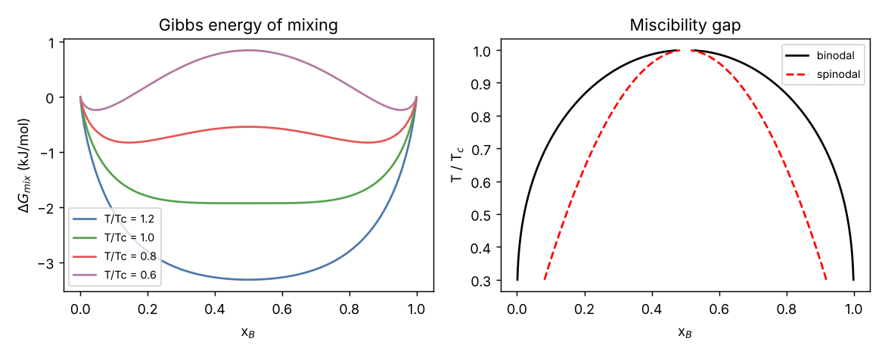
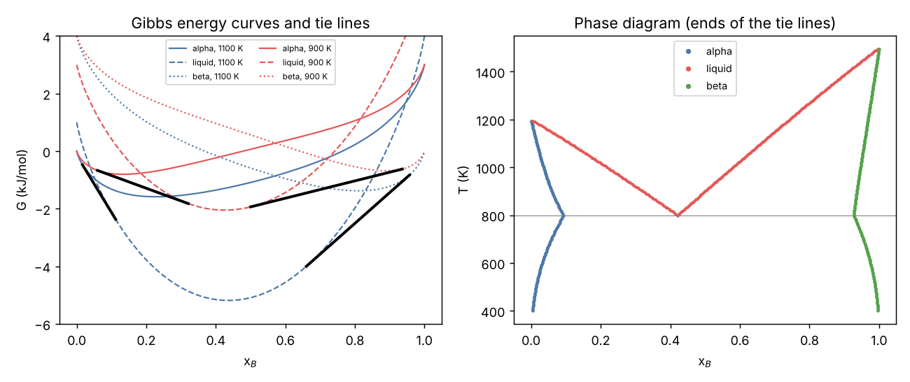

Curriculum/Materials scienceMSE 301
Thermodynamics and CALPHAD
Thermodynamics tells us which structures a material wants to have: which phases are stable at a given temperature, pressure and composition, how much of each is present and what composition each has, and how strongly a system is driven to change when it is not at equilibrium. Every kinetic and microstructure model of this curriculum (diffusion, phase-field, nucleation, precipitation, the simulations of the labs) is driven by thermodynamic quantities, and every phase diagram you will ever use is the outcome of a thermodynamic calculation. This course develops the theory from the Gibbs energy, builds a binary phase diagram from scratch by an explicit common-tangent construction, introduces the CALPHAD method by which real multicomponent databases are built and used, and ends with driving forces for transformations. All calculations were run; the programs are in labs/mse-301; a complete eutectic diagram is computed twice, with our own code and with the open-source package pycalphad, and the results are compared.
- Reading time
- about 68 min
- Level
- Year 3: advanced theory
- Use the Gibbs energy and its derivatives to state conditions of equilibrium and stability, and compute enthalpy, entropy and Gibbs energy from a heat capacity.
- Compute the driving force for a transformation and the critical nucleus.
- Build ideal and regular solution models, and derive and use chemical potentials, activities and the Gibbs–Duhem relation.
- Find binodal and spinodal compositions and the critical temperature of a miscibility gap.
- Construct a binary phase diagram from Gibbs-energy curves by the common-tangent (convex hull) method, and apply the phase rule and the lever rule.
- Explain the structure of a CALPHAD database, fit an interaction parameter to data and state its uncertainty.
- Compute chemical equilibria and read Ellingham-type diagrams.
Seven lectures with calculations that you should reproduce; a problem set of twelve problems with hints and full solutions; a unit quiz. Where thermochemical numbers are used they are either approximate textbook values (aluminium; flagged) or explicit model parameters (the A–B eutectic model, which is not a real alloy) or illustrative values (the oxide in Lecture 7). No claim about a real alloy is based on the model systems.
Lecture 1. Gibbs energy and equilibrium#
The first law, $\mathrm dU=\delta Q-p\,\mathrm dV$ for a closed system doing only pressure–volume work, and the second law, $\delta Q\le T\,\mathrm dS$ with equality for reversible changes, together give the master relation $\mathrm dU\le T\,\mathrm dS-p\,\mathrm dV$. Different experimental conditions call for different thermodynamic potentials, obtained by Legendre transforms: the enthalpy $H=U+pV$, the Helmholtz energy $F=U-TS$ and the Gibbs energy $G=H-TS=U+pV-TS$. Materials are processed and used at (nearly) constant temperature and pressure, so the Gibbs energy is the central quantity. For a system with $n_i$ moles of component $i$, $$\mathrm dG=-S\,\mathrm dT+V\,\mathrm dp+\sum_i\mu_i\,\mathrm dn_i,\qquad\mu_i=\left(\frac{\partial G}{\partial n_i}\right)_{T,p,n_{j\ne i}},$$ where $\mu_i$ is the chemical potential. The second law then says: at constant $T$ and $p$ a spontaneous change has $\mathrm dG\le0$, and the equilibrium state is the state of minimum $G$. From the differential, $S=-(\partial G/\partial T)_p$ and $V=(\partial G/\partial p)_T$, so the entropy and volume are the slopes of $G$; the second derivatives are the response functions: $C_p=-T(\partial^2G/\partial T^2)_p$ (heat capacity) and $\kappa_T=-V^{-1}(\partial V/\partial p)_T$ (compressibility). Stability requires $C_p>0$ and $\kappa_T>0$: $G(T)$ is concave in $T$ and $G(p)$ concave in $p$.
Two phases $\alpha$ and $\beta$ that can exchange heat, volume and matter are in equilibrium when $T^\alpha=T^\beta$, $p^\alpha=p^\beta$ and $\mu_i^\alpha=\mu_i^\beta$ for every component $i$ that can be exchanged. Proof: move $\delta n$ moles of $i$ from $\beta$ to $\alpha$ at fixed $T$ and $p$: $\delta G=(\mu_i^\alpha-\mu_i^\beta)\,\delta n$, which must vanish at a minimum for either sign of $\delta n$. This equality of chemical potentials is the single equation behind every phase diagram in this course.
Thermodynamic functions from the heat capacity
The experimentally accessible quantity is the heat capacity $C_p(T)$, measured by calorimetry. Enthalpy and entropy follow by integration, $H(T)=H(T_0)+\int_{T_0}^TC_p\,\mathrm dT^{\prime}$ and $S(T)=S(T_0)+\int_{T_0}^T(C_p/T^{\prime})\,\mathrm dT^{\prime}$, and the Gibbs energy is $G=H-TS$. Tables of $C_p$ are fitted to polynomials such as the Kelley form $C_p=a+bT+cT^{-2}$. For solid aluminium, approximate textbook values are $C_p=20.67+12.38\times10^{-3}\,T$ J/(mol K) from $298$ K to the melting point (an illustration, not a database). The script integrates these and checks the relations $G=H-TS$ and $S=-\partial G/\partial T$ numerically:
"""Thermodynamic functions from a heat capacity: H, S, G, Maxwell checks, and the driving force for solidification of aluminium.
Heat capacities are approximate textbook (Kelley-type) values for Al, used as an illustration: not a database."""
import numpy as np
from scipy.integrate import quad
R = 8.314462618
Tm, dHm = 933.47, 10711.0 # melting point (K) and enthalpy of fusion (J/mol)
cps = lambda T: 20.67 + 12.38e-3 * T # solid Al, J/(mol K) (valid 298-933 K)
cpl = lambda T: 31.75 + 0.0 * T # liquid Al, J/(mol K)
print("1. thermodynamic functions of solid Al relative to 298.15 K (from Cp = 20.67 + 12.38e-3 T)")
print(" T (K) H(T)-H(298) (J/mol) S(T)-S(298) (J/mol/K) G = H - T S (J/mol) -dG/dT (numerical) | S - (-dG/dT)")
T0 = 298.15
H = lambda T: quad(cps, T0, T)[0]
S = lambda T: quad(lambda t: cps(t) / t, T0, T)[0]
G = lambda T: H(T) - T * S(T)
for T in (300, 500, 700, 900):
h = 1e-3
dGdT = -(G(T + h) - G(T - h)) / (2 * h)
# G here is measured from the 298 K state, so the entropy at 298 K enters as - S298 (T - T0): the derivative of H - T (S - S298) is S - S298
print(f" {T:6.0f} {H(T):12.1f} {S(T):12.4f} {G(T):12.1f} {dGdT:12.4f} {abs(S(T) - dGdT):.1e}")
print(" (G is measured from the state at 298.15 K with S(298) set to zero, so -dG/dT = S(T) - S(298); the Maxwell-type relation G = H - TS and S = -dG/dT hold to the accuracy of the differentiation)")1. thermodynamic functions of solid Al relative to 298.15 K (from Cp = 20.67 + 12.38e-3 T)
T (K) H(T)-H(298) (J/mol) S(T)-S(298) (J/mol/K) G = H - T S (J/mol) -dG/dT (numerical) | S - (-dG/dT)
300 45.1 0.1508 -0.1 0.1508 3.8e-11
500 5169.5 13.1855 -1423.3 13.1855 6.0e-10
700 10789.1 22.6164 -5042.4 22.6164 2.6e-09
900 16903.9 30.2871 -10354.5 30.2871 1.3e-10
(G is measured from the state at 298.15 K with S(298) set to zero, so -dG/dT = S(T) - S(298); the Maxwell-type relation G = H - TS and S = -dG/dT hold to the accuracy of the differentiation)Heating $1$ mol of solid Al from $300$ K to $700$ K takes $10\,744$ J (which is $20.67\times400+\tfrac12\,12.38\times10^{-3}(700^2-300^2)$, as you can check by hand) and raises the entropy by $22.47$ J/(mol K) ($20.67\ln(700/300)+12.38\times10^{-3}\times400$). The numerical derivative of $G$ reproduces $S$ to $10^{-9}$, confirming the thermodynamic identities and the numerical integration; this kind of internal-consistency check is the cheapest way to find errors in a thermodynamic function. The Gibbs energy decreases with temperature ($-5042$ J/mol at $700$ K, $-10\,355$ at $900$ K, relative to $298$ K) because $\partial G/\partial T=-S<0$, and the curve is concave because $\partial^2G/\partial T^2=-C_p/T<0$.
Lecture 2. A pure element: phase transformations and driving forces#
At a given $T$ and $p$ a pure element chooses the phase with the lowest molar Gibbs energy. Two phases, say solid and liquid, have $G_s(T)$ and $G_l(T)$ that are concave curves with different slopes ($-S_s$ and $-S_l$): the liquid has the higher entropy, so its curve is steeper and crosses the solid curve from above at the melting temperature $T_m$. Below $T_m$ the solid is stable, above it the liquid. At $T_m$ the two are in equilibrium, $G_l=G_s$, so $$\Delta H_m=T_m\,\Delta S_m\qquad(\Delta H_m=H_l-H_s\text{, the latent heat; }\Delta S_m=S_l-S_s).$$ The entropy of fusion is of the order of the gas constant for many metals (Richards’ rule: $\Delta S_m\approx R$): the extra disorder of the liquid is of a similar size for all close-packed metals. For Al, $\Delta S_m=\Delta H_m/T_m=10\,711/933.5=11.47$ J/(mol K) $=1.38R$.
Driving force for solidification
Below $T_m$ the liquid is metastable (undercooled), and the Gibbs-energy difference $\Delta G(T)=G_l-G_s>0$ is the driving force for the transformation; it is the energy released per mole when the liquid solidifies and it enters every nucleation and growth theory. Its exact value is obtained by integrating the thermodynamic functions of both phases from $T_m$, where $\Delta G=0$: $$\Delta H(T)=\Delta H_m+\int_{T_m}^T\Delta C_p\,\mathrm dT^{\prime},\quad\Delta S(T)=\frac{\Delta H_m}{T_m}+\int_{T_m}^T\frac{\Delta C_p}{T^{\prime}}\,\mathrm dT^{\prime},\quad\Delta G=\Delta H-T\Delta S,$$ with $\Delta C_p=C_p^l-C_p^s$. If one neglects $\Delta C_p$ one finds the simple Turnbull approximation $\Delta G\approx\Delta H_m\,\Delta T/T_m$, with the undercooling $\Delta T=T_m-T$ (a linear approximation of the difference of two straight lines). With the approximate heat capacities of liquid ($31.75$ J/(mol K)) and solid Al:
print("\n2. the driving force for solidification of Al: dG(T) = G_liquid - G_solid below the melting point")
def dG_exact(T):
# d(dG)/dT = -(S_l - S_s); dS(T) = dHm/Tm + int_Tm^T (cpl - cps)/t dt ; dH(T) = dHm + int_Tm^T (cpl - cps) dt
dH = dHm + quad(lambda t: cpl(t) - cps(t), Tm, T)[0]
dS = dHm / Tm + quad(lambda t: (cpl(t) - cps(t)) / t, Tm, T)[0]
return dH - T * dS
print(" undercooling exact dG (J/mol) Turnbull dHm dT/Tm Turnbull/exact Hoffman dHm dT/Tm (T/Tm)")
for dT in (10, 50, 100, 200, 300):
T = Tm - dT
ex = dG_exact(T); tb = dHm * dT / Tm; tb2 = dHm * (Tm - T) / Tm * (T / Tm)
print(f" {dT:6.0f} K {ex:12.1f} {tb:12.1f} {tb / abs(ex):10.4f} {tb2:10.1f}")
print(" dG = G_liquid - G_solid is positive below Tm: the solid is more stable and dG is the driving force for solidification. Turnbull's approximation dHm dT/Tm neglects the heat-capacity difference between liquid and solid; Hoffman's adds a factor T/Tm.")2. the driving force for solidification of Al: dG(T) = G_liquid - G_solid below the melting point
undercooling exact dG (J/mol) Turnbull dHm dT/Tm Turnbull/exact Hoffman dHm dT/Tm (T/Tm)
10 K 114.8 114.7 0.9998 113.5
50 K 574.1 573.7 0.9994 543.0
100 K 1147.8 1147.4 0.9997 1024.5
200 K 2286.0 2294.9 1.0039 1803.2
300 K 3396.6 3442.3 1.0135 2336.0
dG = G_liquid - G_solid is positive below Tm: the solid is more stable and dG is the driving force for solidification. Turnbull's approximation dHm dT/Tm neglects the heat-capacity difference between liquid and solid; Hoffman's adds a factor T/Tm.
3. heat of fusion from the Gibbs energies at the melting point: dG(Tm) = 0 and dH = Tm dS
dG(Tm) = 0.0e+00 J/mol, dS(Tm) = dHm/Tm = 11.474 J/(mol K) = 1.380 R (Richards' rule: about R for many metals)The Turnbull expression is accurate to $0.03\%$ at $100$ K undercooling ($1147.4$ against $1147.8$ J/mol) and still within $1.4\%$ at $300$ K, because for aluminium the heat capacities of liquid and solid are close ($\Delta C_p=31.75-(20.67+0.01238T)$ is small and changes sign near $900$ K). Hoffman’s variant $\Delta H_m\Delta T/T_m\times T/T_m$ is a worse approximation here ($1025$ against $1148$ J/mol at $100$ K). For substances with a large $\Delta C_p$ the difference can be much larger: always compute from the heat capacities when the data exist. The driving force is of order $10^3$ J/mol, about $0.012$ eV per atom, a small number compared with a bond energy ($\sim3$ eV) and still the quantity on which solidification microstructures depend.
Pressure and the Clausius–Clapeyron equation
Along the coexistence line of two phases $\mathrm dG^\alpha=\mathrm dG^\beta$ gives $-S^\alpha\mathrm dT+V^\alpha\mathrm dp=-S^\beta\mathrm dT+V^\beta\mathrm dp$, so $$\frac{\mathrm dT_m}{\mathrm dp}=\frac{\Delta V}{\Delta S}=\frac{T_m\,\Delta V}{\Delta H}.$$ For a substance that expands on melting ($\Delta V>0$) the melting point rises with pressure, which is the case for most metals (Exercise 12). The sign is reversed for water, silicon and bismuth, which contract on melting.
Lecture 3. Solutions: mixing, chemical potential and activity#
An alloy is a mixture of components, and its Gibbs energy depends on the composition. For a binary solution of $A$ and $B$ with mole fractions $1-x$ and $x$, the molar Gibbs energy is conveniently written relative to the pure components, $$G(x)=(1-x)\,G_A^\circ+x\,G_B^\circ+\Delta G_\mathrm{mix}(x),\qquad\Delta G_\mathrm{mix}=\Delta H_\mathrm{mix}-T\Delta S_\mathrm{mix}.$$ In the ideal solution the atoms mix randomly with no change of energy, $\Delta H_\mathrm{mix}=0$, and the entropy of mixing is the configurational (Boltzmann) entropy of distributing the atoms over the sites, $\Delta S_\mathrm{mix}=-R\,[x\ln x+(1-x)\ln(1-x)]$ (PHYS 301: $S=k_B\ln W$ with $W=N!/[(Nx)!(N(1-x))!]$ and Stirling’s formula). The entropy of mixing is always positive and its slope is infinite at $x=0$ and $1$: a pure substance always dissolves a little of any impurity, because the entropy gain of the first impurity atoms is infinite relative to its cost. The regular solution adds an enthalpy of mixing from nearest-neighbour interactions, $\Delta H_\mathrm{mix}=\Omega\,x(1-x)$, where $\Omega=zN_A[\epsilon_{AB}-\tfrac12(\epsilon_{AA}+\epsilon_{BB})]$ ($z$ is the coordination number and the $\epsilon$ are bond energies): $\Omega>0$ means that unlike neighbours are unfavourable (clustering tendency), $\Omega<0$ favourable (ordering tendency). We write $w$ for $\Omega$ in the code. The ideal-solution numbers at $1000$ K and $x=0.5$:
"""Ideal and regular solutions: Gibbs energy of mixing, chemical potentials, Gibbs-Duhem, spinodal and binodal."""
import numpy as np
from scipy.optimize import brentq
import matplotlib; matplotlib.use("Agg")
import matplotlib.pyplot as plt
R = 8.314462618
def gmix(x, w, T): # J/mol, regular solution, Omega = w
return R * T * (x * np.log(x) + (1 - x) * np.log(1 - x)) + w * x * (1 - x)
def mu_B(x, w, T): # chemical potential of B relative to pure B
return R * T * np.log(x) + w * (1 - x)**2
def mu_A(x, w, T):
return R * T * np.log(1 - x) + w * x**2
print("1. ideal solution at 1000 K, x = 0.5: Gibbs energy of mixing and chemical potentials")
T = 1000.0; x = 0.5
print(f" dG_mix = {gmix(x, 0.0, T):.1f} J/mol = -T dS_mix with dS_mix = {-R * (x * np.log(x) + (1 - x) * np.log(1 - x)):.4f} J/(mol K) = R ln 2 = {R * np.log(2):.4f}")
print(f" mu_A - mu_A(pure) = {mu_A(x, 0.0, T):.1f} J/mol = RT ln x_A; activity a_A = exp(mu/RT) = {np.exp(mu_A(x, 0.0, T) / (R * T)):.3f}")1. ideal solution at 1000 K, x = 0.5: Gibbs energy of mixing and chemical potentials
dG_mix = -5763.1 J/mol = -T dS_mix with dS_mix = 5.7631 J/(mol K) = R ln 2 = 5.7631
mu_A - mu_A(pure) = -5763.1 J/mol = RT ln x_A; activity a_A = exp(mu/RT) = 0.500$\Delta G_\mathrm{mix}=-5763$ J/mol, entirely entropic: $T\Delta S_\mathrm{mix}=T R\ln2$. The chemical potential relative to the pure component is $\mu_A-\mu_A^\circ=RT\ln x_A$ (ideal solution), whose exponential is the activity, $a_A=\exp[(\mu_A-\mu_A^\circ)/RT]$; for the ideal solution $a_A=x_A$ (Raoult’s law). The activity coefficient $\gamma_A=a_A/x_A$ measures the deviation from ideality.
Chemical potentials from the Gibbs-energy curve: the tangent construction
For a binary system with molar Gibbs energy $G(x)$, the chemical potentials are the intercepts of the tangent: drawing the tangent to $G(x)$ at composition $x$, it cuts the axis $x=0$ at $\mu_A$ and the axis $x=1$ at $\mu_B$. Algebraically, $$\mu_A=G-x\frac{\mathrm dG}{\mathrm dx},\qquad\mu_B=G+(1-x)\frac{\mathrm dG}{\mathrm dx},\qquad\mu_B-\mu_A=\frac{\mathrm dG}{\mathrm dx}.$$ (Proof: $G=(1-x)\mu_A+x\mu_B$ for a binary, from the homogeneity of $G$ in the mole numbers, and differentiating, with the Gibbs–Duhem relation below.) Differentiating $G=(1-x)\mu_A+x\mu_B$ and comparing with $\mathrm dG=(\mu_B-\mu_A)\,\mathrm dx$ gives the Gibbs–Duhem relation $(1-x)\,\mathrm d\mu_A+x\,\mathrm d\mu_B=0$ at constant $T$ and $p$: the chemical potentials of the components of a solution are not independent. A consequence is that if the activity of one component is measured over the whole composition range, that of the other can be calculated by integration. For the regular solution, $$\mu_A-\mu_A^\circ=RT\ln(1-x)+\Omega x^2,\qquad\mu_B-\mu_B^\circ=RT\ln x+\Omega(1-x)^2,\qquad\gamma_B=\exp\frac{\Omega(1-x)^2}{RT}.$$ The program checks the three identities numerically for $\Omega=10$ kJ/mol and $T=1000$ K, and prints the activity coefficients:
print("\n2. Gibbs-Duhem check for a regular solution (w = 10 kJ/mol, T = 1000 K): (1-x) dmu_A/dx + x dmu_B/dx = 0")
w = 10000.0
for x in (0.1, 0.3, 0.5, 0.8):
h = 1e-6
dA = (mu_A(x + h, w, T) - mu_A(x - h, w, T)) / (2 * h); dB = (mu_B(x + h, w, T) - mu_B(x - h, w, T)) / (2 * h)
# tangent-intercept construction: mu_B - mu_A = dG/dx, G = (1-x) mu_A + x mu_B
G = gmix(x, w, T); dG = (gmix(x + h, w, T) - gmix(x - h, w, T)) / (2 * h)
print(f" x = {x:.1f}: (1-x)dmuA/dx + x dmuB/dx = {(1 - x) * dA + x * dB: .2e} J/mol; G - [(1-x)muA + x muB] = {G - ((1 - x) * mu_A(x, w, T) + x * mu_B(x, w, T)): .2e}; muB - muA - dG/dx = {mu_B(x, w, T) - mu_A(x, w, T) - dG: .2e}")
print("\n3. activity coefficients of the regular solution: gamma_B = exp(w (1-x)^2/RT) (w = 10 kJ/mol, T = 1000 K)")
for x in (0.01, 0.1, 0.5, 0.9, 1.0 - 1e-9):
print(f" x_B = {x:9.6f} gamma_B = {np.exp(w * (1 - x)**2 / (R * T)):.4f} activity a_B = {x * np.exp(w * (1 - x)**2 / (R * T)):.5f}")
print(f" at infinite dilution gamma_B^infinity = exp(w/RT) = {np.exp(w / (R * T)):.4f} (Henry's law constant relative to Raoult's)")2. Gibbs-Duhem check for a regular solution (w = 10 kJ/mol, T = 1000 K): (1-x) dmu_A/dx + x dmu_B/dx = 0
x = 0.1: (1-x)dmuA/dx + x dmuB/dx = -1.14e-08 J/mol; G - [(1-x)muA + x muB] = 0.00e+00; muB - muA - dG/dx = 3.68e-07
x = 0.3: (1-x)dmuA/dx + x dmuB/dx = 4.09e-07 J/mol; G - [(1-x)muA + x muB] = 0.00e+00; muB - muA - dG/dx = -1.53e-08
x = 0.5: (1-x)dmuA/dx + x dmuB/dx = 4.55e-07 J/mol; G - [(1-x)muA + x muB] = 0.00e+00; muB - muA - dG/dx = -4.55e-07
x = 0.8: (1-x)dmuA/dx + x dmuB/dx = -1.82e-07 J/mol; G - [(1-x)muA + x muB] = -1.36e-12; muB - muA - dG/dx = -8.60e-07
3. activity coefficients of the regular solution: gamma_B = exp(w (1-x)^2/RT) (w = 10 kJ/mol, T = 1000 K)
x_B = 0.010000 gamma_B = 3.2504 activity a_B = 0.03250
x_B = 0.100000 gamma_B = 2.6491 activity a_B = 0.26491
x_B = 0.500000 gamma_B = 1.3508 activity a_B = 0.67539
x_B = 0.900000 gamma_B = 1.0121 activity a_B = 0.91089
x_B = 1.000000 gamma_B = 1.0000 activity a_B = 1.00000
at infinite dilution gamma_B^infinity = exp(w/RT) = 3.3292 (Henry's law constant relative to Raoult's)The Gibbs–Duhem combination vanishes to $10^{-7}$ J/mol (the accuracy of the numerical derivative), and the intercept relations are exact. The activity coefficient shows the physics of a positive $\Omega$: $\gamma_B$ is $1$ for pure B and rises as B is diluted, to $\gamma_B^\infty=\mathrm e^{\Omega/RT}=3.33$ at infinite dilution; at $x=0.01$ the effective “concentration” $a_B=0.0325$ is more than three times the mole fraction: the B atoms in a solvent that dislikes them have an escaping tendency greater than their number suggests (a high vapour pressure, a high tendency to segregate to surfaces and grain boundaries). The ratio of $a_B/x_B$ at infinite dilution is Henry’s constant relative to Raoult’s law: Henry’s law ($a_B\propto x_B$) holds in the dilute limit, Raoult’s law ($a_B=x_B$) near pure B.
The activity of B in a binary liquid at $1000$ K is $a_B=0.2649$ at $x_B=0.1$. Assume a regular solution. Find $\Omega$ and predict $a_A$ at the same composition.
$\gamma_B=a_B/x_B=2.649$, so $\ln\gamma_B=0.9742=\Omega(1-x)^2/RT$ and $\Omega=0.9742\times8314.5/0.81=10\,000$ J/mol. The Gibbs–Duhem relation gives the other activity coefficient: $\ln\gamma_A=\Omega x_B^2/RT=0.01\times10\,000/8314.5=0.01203$, so $a_A=0.9\times\mathrm e^{0.01203}=0.9109$. The tiny activity coefficient of the solvent ($1.012$) against the large one of the solute ($2.65$) is typical of dilute solutions: the solvent is nearly ideal while the solute is not.
Lecture 4. Stability and the miscibility gap#
If the Gibbs-energy curve $G(x)$ is concave up everywhere ($G^{\prime\prime}>0$), every composition is stable against separation into two compositions. When the interaction is repulsive, the (negative) mixing enthalpy term $\Omega x(1-x)$ competes with the entropy term $RT[x\ln x+(1-x)\ln(1-x)]$, which dominates at high temperature. For the regular solution $$\frac{\mathrm d^2G}{\mathrm dx^2}=\frac{RT}{x(1-x)}-2\Omega,$$ which is positive for all $x$ if $RT>\Omega/2$, but becomes negative around $x=1/2$ when $T<T_c=\Omega/(2R)$. In that range the curve has two minima and a hump (Figure). For a composition between the two minima the solution can lower its Gibbs energy by separating into two phases with different compositions: the miscibility gap.

The two phases that coexist have equal chemical potentials, $\mu_A(x^\prime)=\mu_A(x^{\prime\prime})$ and $\mu_B(x^\prime)=\mu_B(x^{\prime\prime})$, which means that they lie on one common tangent of $G(x)$: this defines the binodal (coexistence curve). For the symmetric regular solution the common tangent is horizontal (by symmetry), so the binodal condition reduces to $G^{\prime}(x)=0$, i.e. $RT\ln\dfrac{x}{1-x}+\Omega(1-2x)=0$, which must be solved numerically (the same equation as in COMP 201, Lecture 2, with $\Omega/RT=2.5$). The spinodal is the locus where $G^{\prime\prime}=0$: $x(1-x)=RT/(2\Omega)$. Between the binodal and the spinodal the solution is metastable: it lowers $G$ by separating, but only by a large composition fluctuation (nucleation of the new phase). Inside the spinodal it is unstable against infinitesimal fluctuations (spinodal decomposition, CMS 505, LAB 506).
print("\n4. stability: second derivative of G_mix and the miscibility gap (symmetric regular solution, Tc = w/(2R))")
w = 20000.0; Tc = w / (2 * R)
print(f" w = 20 kJ/mol -> critical temperature Tc = {Tc:.1f} K")
def spinodal(T):
r = 2 * R * T / w
return 0.5 * (1 - np.sqrt(1 - r)) if r < 1 else np.nan
def binodal(T):
f = lambda x: R * T * np.log(x / (1 - x)) + w * (1 - 2 * x)
return brentq(f, 1e-12, 0.5 - 1e-9) if T < Tc else np.nan
print(" T (K) T/Tc binodal x spinodal x G''(0.5)/RT (G''<0 inside the spinodal)")
rows = []
for r in (0.5, 0.7, 0.8, 0.9, 0.95, 0.99):
T = r * Tc; xb = binodal(T); xs = spinodal(T)
g2 = R * T / 0.25 - 2 * w
rows.append((T, xb, xs))
print(f" {T:7.1f} {r:5.2f} {xb:9.5f} {xs:9.5f} {g2 / (R * T):8.3f}")
print(" check of the binodal at T/Tc = 0.8: common-tangent condition mu_A(x1) = mu_A(x2), mu_B(x1) = mu_B(x2):")
T = 0.8 * Tc; x1 = binodal(T); x2 = 1 - x1
print(f" x1 = {x1:.6f}, x2 = {x2:.6f}: mu_A difference = {mu_A(x1, w, T) - mu_A(x2, w, T): .2e} J/mol, mu_B difference = {mu_B(x1, w, T) - mu_B(x2, w, T): .2e} J/mol")
print(f" critical exponent: near Tc the binodal width scales as sqrt(1 - T/Tc): at T/Tc = 0.99 the half-width 0.5 - x = {0.5 - binodal(0.99 * Tc):.4f}, mean-field prediction sqrt(3(1-T/Tc)) / 2 = {np.sqrt(3 * 0.01) / 2:.4f}")4. stability: second derivative of G_mix and the miscibility gap (symmetric regular solution, Tc = w/(2R))
w = 20 kJ/mol -> critical temperature Tc = 1202.7 K
T (K) T/Tc binodal x spinodal x G''(0.5)/RT (G''<0 inside the spinodal)
601.4 0.50 0.02125 0.14645 -4.000
841.9 0.70 0.08568 0.22614 -1.714
962.2 0.80 0.14479 0.27639 -1.000
1082.5 0.90 0.23729 0.34189 -0.444
1142.6 0.95 0.31026 0.38820 -0.211
1190.7 0.99 0.41374 0.45000 -0.040
check of the binodal at T/Tc = 0.8: common-tangent condition mu_A(x1) = mu_A(x2), mu_B(x1) = mu_B(x2):
x1 = 0.144794, x2 = 0.855206: mu_A difference = 1.25e-12 J/mol, mu_B difference = 2.73e-12 J/mol
critical exponent: near Tc the binodal width scales as sqrt(1 - T/Tc): at T/Tc = 0.99 the half-width 0.5 - x = 0.0863, mean-field prediction sqrt(3(1-T/Tc)) / 2 = 0.0866The critical temperature is $T_c=\Omega/2R=1202.7$ K for $\Omega=20$ kJ/mol. At $T/T_c=0.5$ the miscibility gap is huge (solubility $x=0.021$ at the binodal on both sides) and the spinodal sits at $0.146$; at $0.8$ the binodal compositions are $0.1448$ and $0.8552$ (the same numbers as in the Newton calculation of COMP 201) and the spinodal compositions $0.2764$ and $0.7236$; the second derivative at the centre is $-RT$ times $1.0$: $G^{\prime\prime}(0.5)/RT=4-2\Omega/RT=4-5=-1$. The verification that the roots really are the coexistence composition is the pair of equal-chemical-potential conditions evaluated at the numerical roots, which hold to $10^{-12}$ J/mol. Close to $T_c$ the gap closes with a square-root law: the half-width $\tfrac12-x_\mathrm{binodal}$ is $0.0863$ at $T/T_c=0.99$, against the mean-field prediction $\tfrac12\sqrt{3(1-T/T_c)}=0.0866$. (The real critical behaviour of an alloy is not mean-field: the Ising exponent is $\beta\approx0.33$ in three dimensions instead of $\tfrac12$, as the Monte Carlo of LAB 504 shows; the regular-solution model is the mean-field, or Bragg–Williams, approximation of the Ising model.) Real alloy diagrams are asymmetric (the gap is skewed, and $\Omega$ depends on $T$ and $x$), and the tools for that are the subject of Lecture 6.
It is tempting to say that the equilibrium compositions are the minima of $G(x)$. For the symmetric model this is true, but in general it is not: the correct condition is equal slopes and equal intercepts (common tangent), and the two minima of an asymmetric curve are not at the coexistence compositions. A two-phase mixture has Gibbs energy given by the straight line between the two phases (lever rule), and the stable state is the lowest of all such lines, i.e. the lower convex hull of $G(x)$ (next lecture).
Lecture 5. Binary phase diagrams from Gibbs-energy curves#
A phase diagram is a map of the equilibrium state as a function of the intensive variables (temperature, pressure, composition). Every region and every line of a binary diagram is the consequence of one rule, the minimisation of $G$, applied at each temperature: at fixed $T$, the equilibrium state of an alloy of composition $x_0$ is the combination of phases and compositions with the lowest total Gibbs energy.
The rules
- Gibbs phase rule. The number of degrees of freedom (intensive variables that can be changed independently without changing the set of phases) is $F=C-P+2$, with $C$ components and $P$ phases (the $2$ stands for $T$ and $p$). At constant pressure, as in most materials work, $F=C-P+1$. For a binary alloy: one phase has $F=2$ ($T$ and $x$ can both vary); two phases $F=1$ (at a given $T$ the compositions are fixed); three phases $F=0$ (an invariant point, such as the eutectic: temperature and compositions are fixed).
- Common tangent. Two phases coexist when a line touches both Gibbs-energy curves: equal chemical potentials. The mixture of the two phases has the Gibbs energy of the point on the tangent line directly above the overall composition.
- Lever rule. If an alloy of composition $x_0$ separates into phases of composition $x_1$ and $x_2$ ($x_1<x_0<x_2$), mass balance gives the fractions $f_1=(x_2-x_0)/(x_2-x_1)$ and $f_2=(x_0-x_1)/(x_2-x_1)$: the fraction of a phase is the length of the opposite lever arm divided by the length of the tie line.
Building a eutectic diagram numerically
The model system has three phases: a liquid and two solid solutions, $\alpha$ (A-rich) and $\beta$ (B-rich). The Gibbs energies per mole of atoms, relative to the stable pure solids, are regular-solution models: $$G^\alpha=x\,g_B^\alpha+RT\,[x\ln x+(1-x)\ln(1-x)]+L^\alpha x(1-x),\qquad g_B^\alpha=3000\ \mathrm{J/mol},\ L^\alpha=15\,000,$$ $$G^\beta=(1-x)\,g_A^\beta+(\text{same mixing terms})+L^\beta x(1-x),\qquad g_A^\beta=4000,\ L^\beta=15\,000,$$ $$G^L=(1-x)(12\,000-10T)+x(15\,000-10T)+(\text{mixing})-5000\,x(1-x).$$ The liquid energies are $\Delta H_m(1-T/T_m)$ for each pure component (melting points $1200$ and $1500$ K with $\Delta S_m=10$ J/(mol K)), and the interaction in the liquid is attractive while those of the solids are repulsive: the standard recipe for a eutectic system. We call this a model: it is not the Gibbs-energy description of a real alloy. The algorithm is: at each temperature, evaluate the three curves on a fine grid of composition, take the lowest of the three at each composition, and compute the lower convex hull of the resulting set of points (a computational-geometry routine; the segments of the hull that join points belonging to different phases are the tie lines, and the points where the hull follows a single curve are single-phase regions). This is exactly the common-tangent construction, performed without having to solve any equation:
"""A binary eutectic phase diagram from Gibbs-energy curves: lower convex hull (common tangent) at each temperature."""
import numpy as np
import matplotlib; matplotlib.use("Agg")
import matplotlib.pyplot as plt
R = 8.314462618
PHASES = ("alpha", "liquid", "beta")
def G(phase, x, T):
"""Gibbs energy per mole of atoms, J/mol. Reference: stable pure solids (alpha for A, beta for B)."""
mix = R * T * (x * np.log(x) + (1 - x) * np.log(1 - x))
if phase == "alpha": return x * 3000.0 + mix + 15000.0 * x * (1 - x)
if phase == "beta": return (1 - x) * 4000.0 + mix + 15000.0 * x * (1 - x)
if phase == "liquid": return (1 - x) * (12000.0 - 10.0 * T) + x * (15000.0 - 10.0 * T) + mix - 5000.0 * x * (1 - x)
xg = np.linspace(1e-5, 1 - 1e-5, 4001)
def hull(T):
"""Lower convex hull of the union of the three G(x) curves; returns the vertices (x, G, phase index)."""
pts = []
for ip, ph in enumerate(PHASES):
g = G(ph, xg, T)
pts += list(zip(xg, g, [ip] * len(xg)))
pts.sort(key=lambda p: (p[0], p[1]))
# keep, for every x, the lowest curve, then run the monotone-chain lower hull
lowest = {}
for x, g, ip in pts:
if x not in lowest or g < lowest[x][0]: lowest[x] = (g, ip)
P = [(x, v[0], v[1]) for x, v in sorted(lowest.items())]
H = []
for p in P:
while len(H) >= 2 and (H[-1][0] - H[-2][0]) * (p[1] - H[-2][1]) - (H[-1][1] - H[-2][1]) * (p[0] - H[-2][0]) <= 0:
H.pop()
H.append(p)
return H
def two_phase_intervals(T):
"""Intervals (x1, x2, phase1, phase2) of the hull whose end points belong to different phases (tie lines), longer than one grid step."""
H = hull(T); out = []
for a, b in zip(H[:-1], H[1:]):
if a[2] != b[2] and b[0] - a[0] > 3 * (xg[1] - xg[0]):
out.append((a[0], b[0], PHASES[a[2]], PHASES[b[2]]))
return out
def liquid_present(T):
return any(p[2] == 1 for p in hull(T))
print("1. the Gibbs-energy curves at three temperatures and the common tangents (tie lines)")
for T in (1100.0, 900.0, 700.0):
print(f" T = {T:.0f} K:")
for (x1, x2, p1, p2) in two_phase_intervals(T):
print(f" two-phase region {p1:7s} + {p2:7s}: x_B from {x1:.4f} to {x2:.4f}")
print("\n2. the eutectic: highest temperature at which the three-phase equilibrium alpha + liquid + beta exists")
lo, hi = 400.0, 1100.0 # liquid absent at lo, present at hi
assert not liquid_present(lo) and liquid_present(hi)
while hi - lo > 0.01:
mid = 0.5 * (lo + hi)
if liquid_present(mid): hi = mid
else: lo = mid
Te = 0.5 * (lo + hi)
H = hull(hi + 0.05)
xl = [p[0] for p in H if p[2] == 1]
iv = two_phase_intervals(Te - 1.0)
print(f" eutectic temperature T_E = {Te:.2f} K; just above it the liquid exists only near x_B = {np.mean(xl):.3f} (range {min(xl):.3f}-{max(xl):.3f})")
print(" below it the tie line joins:", ", ".join(f"{p1} x = {x1:.4f} / {p2} x = {x2:.4f}" for (x1, x2, p1, p2) in iv))
xa = iv[0][0] if iv[0][2] == "alpha" else None
Tin = Te - 1.0
alpha_x = iv[0][0]; beta_x = iv[0][1]
print("\n3. the lever rule for an alloy x0 = 0.30 B at several temperatures")
x0 = 0.30
for T in (1250.0, 1150.0, 1000.0, 900.0, Te + 1.0, Te - 5.0, 600.0):
ivs = two_phase_intervals(T)
hit = [(a, b, p, q) for (a, b, p, q) in ivs if a <= x0 <= b]
if not hit:
print(f" T = {T:7.1f} K: single phase")
else:
a, b, p, q = hit[0]; f2 = (x0 - a) / (b - a)
print(f" T = {T:7.1f} K: {p} (x = {a:.4f}) fraction {1 - f2:.3f} + {q} (x = {b:.4f}) fraction {f2:.3f}")
print("\n4. solidification path of the x0 = 0.30 alloy on cooling (equilibrium): liquidus, start of solidification")
T = 1500.0
while T > 800 and not any(a <= x0 <= b for (a, b, p, q) in two_phase_intervals(T)): T -= 1.0
liq = T + 0.5
print(f" liquidus temperature near {liq:.1f} K; first solid has composition", end=" ")
a, b, p, q = [t for t in two_phase_intervals(T) if t[0] <= x0 <= t[1]][0]
print(f"{q if p == 'liquid' else p} x_B = {(b if p == 'liquid' else a):.4f} (the liquid is {p if p == 'liquid' else q} at x_B = {(a if p == 'liquid' else b):.4f})")
fig, ax = plt.subplots(1, 2, figsize=(10, 4.2))
for T, c in ((1100.0, "#4c78a8"), (900.0, "#e45756")):
for ph, ls in zip(PHASES, ("-", "--", ":")):
ax[0].plot(xg, np.array(G(ph, xg, T)) / 1000, ls, color=c, lw=1.2, label=f"{ph}, {T:.0f} K" if True else None)
for (x1, x2, p1, p2) in two_phase_intervals(T):
y1 = G(p1, np.array([x1]), T)[0] / 1000; y2 = G(p2, np.array([x2]), T)[0] / 1000
ax[0].plot([x1, x2], [y1, y2], "k-", lw=2.2)
ax[0].set_ylim(-6, 4); ax[0].set_xlabel("x$_B$"); ax[0].set_ylabel("G (kJ/mol)"); ax[0].legend(fontsize=6.5, ncol=2); ax[0].set_title("Gibbs energy curves and tie lines")
mark = {"alpha": "#4c78a8", "liquid": "#e45756", "beta": "#54a24b"}
for T in np.arange(400.0, 1560.0, 5.0):
for (x1, x2, p1, p2) in two_phase_intervals(T):
ax[1].plot([x1, x2], [T, T], ".", ms=1.5, color="k", alpha=0.12)
ax[1].plot([x1], [T], ".", ms=3, color=mark[p1]); ax[1].plot([x2], [T], ".", ms=3, color=mark[p2])
ax[1].axhline(Te, color="gray", lw=0.6); ax[1].set_xlabel("x$_B$"); ax[1].set_ylabel("T (K)"); ax[1].set_title("Phase diagram (ends of the tie lines)"); [ax[1].plot([], [], ".", color=c, label=n) for n, c in mark.items()]; ax[1].legend(fontsize=8, loc="upper center")
fig.tight_layout(); fig.savefig("diagram.png", dpi=130)
print("\nsaved diagram.png")1. the Gibbs-energy curves at three temperatures and the common tangents (tie lines)
T = 1100 K:
two-phase region alpha + liquid : x_B from 0.0165 to 0.1120
two-phase region liquid + beta : x_B from 0.6602 to 0.9570
T = 900 K:
two-phase region alpha + liquid : x_B from 0.0598 to 0.3208
two-phase region liquid + beta : x_B from 0.5002 to 0.9362
T = 700 K:
two-phase region alpha + beta : x_B from 0.0583 to 0.9542
2. the eutectic: highest temperature at which the three-phase equilibrium alpha + liquid + beta exists
eutectic temperature T_E = 799.88 K; just above it the liquid exists only near x_B = 0.421 (range 0.421-0.421)
below it the tie line joins: alpha x = 0.0933 / beta x = 0.9275
3. the lever rule for an alloy x0 = 0.30 B at several temperatures
T = 1250.0 K: single phase
T = 1150.0 K: single phase
T = 1000.0 K: single phase
T = 900.0 K: alpha (x = 0.0598) fraction 0.080 + liquid (x = 0.3208) fraction 0.920
T = 800.9 K: alpha (x = 0.0933) fraction 0.368 + liquid (x = 0.4203) fraction 0.632
T = 794.9 K: alpha (x = 0.0918) fraction 0.751 + beta (x = 0.9285) fraction 0.249
T = 600.0 K: alpha (x = 0.0320) fraction 0.716 + beta (x = 0.9750) fraction 0.284
4. solidification path of the x0 = 0.30 alloy on cooling (equilibrium): liquidus, start of solidification
liquidus temperature near 920.5 K; first solid has composition alpha x_B = 0.0545 (the liquid is liquid at x_B = 0.3005)
At $1100$ K the hull contains an $\alpha+$liquid tie line from $x_B=0.0165$ to $0.1120$ and a liquid$+\beta$ tie line from $0.6602$ to $0.9570$: the liquid is stable between $0.112$ and $0.660$. At $900$ K the liquid range has narrowed to $0.321$–$0.500$. At $700$ K the liquid has disappeared and the only tie line joins $\alpha$ at $x_B=0.058$ and $\beta$ at $0.954$. The program finds the eutectic temperature by bisection on the temperature at which the liquid first appears in the hull: $T_E=799.88$ K, with the liquid at $x_B=0.421$ in equilibrium with $\alpha$ at $0.0933$ and $\beta$ at $0.9275$ (the tie line just below). The eutectic is the invariant point where $F=0$: three phases coexist at one temperature and three fixed compositions.
Reading the diagram: the lever rule at work
For the alloy $x_B=0.30$ the hull at various temperatures gives the phase fractions of item 3 above. At $1000$ K it is entirely liquid; the liquidus is at $920$ K (the first solid $\alpha$ appears there with $x_B=0.0545$, much poorer in B than the liquid: solute is rejected by the growing solid); at $900$ K the lever rule gives $8.0\%$ $\alpha$ (composition $0.0598$) and $92.0\%$ liquid ($0.3208$), from $f_\alpha=(0.3208-0.30)/(0.3208-0.0598)=0.080$ and $f_L=(0.30-0.0598)/(0.3208-0.0598)=0.920$ (each fraction is proportional to the lever arm on the opposite side of the alloy composition). Just above the eutectic ($800.9$ K) there is $36.8\%$ $\alpha$ and $63.2\%$ liquid of composition $0.4203$, and just below it the liquid has become a mixture of $\alpha$ and $\beta$. So after complete equilibrium solidification the microstructure of this alloy consists of primary $\alpha$ dendrites ($36.8\%$) surrounded by the eutectic constituent ($63.2\%$), a prediction that can be compared with a micrograph (MSE 101). In practice the cooling is faster than the diffusion in the solid, and the composition of the solid is not uniform (coring): the Scheil model of LAB 505 describes this limit.
A check against pycalphad
The same model, written as a thermodynamic database file (eutectic.tdb, the format of Lecture 6), is read by the open-source pycalphad (LAB 505), which minimises the Gibbs energy with its own algorithm. The results for the alloy $x_B=0.30$ (and the check of the chemical potentials at $900$ K):
pycalphad equilibria for the alloy x_B = 0.30 (phase, fraction, composition x_B):
T = 1000.0 K: LIQUID 1.000 x = 0.3000
T = 900.0 K: ALPHA 0.079 x = 0.0598 LIQUID 0.921 x = 0.3207
T = 801.0 K: ALPHA 0.367 x = 0.0933 LIQUID 0.633 x = 0.4201
T = 795.0 K: ALPHA 0.751 x = 0.0918 BETA 0.249 x = 0.9286
T = 600.0 K: ALPHA 0.716 x = 0.0320 BETA 0.284 x = 0.9750
the chemical potentials at 900 K (J/mol, relative to the reference states): the equal-potential condition
mu_A = -407.84, mu_B = -4817.43; the tie line (alpha 0.0598, liquid 0.3208) of the hull construction has the common tangent with these intercepts
hull tie line: mu_A = -407.83, mu_B = -4817.37
the eutectic: scan the temperature at x_B = 0.421
T = 803.0 K: LIQUID (1.000)
T = 801.0 K: LIQUID (1.000)
T = 800.5 K: LIQUID (1.000)
T = 799.0 K: ALPHA (0.607) BETA (0.393)
T = 797.0 K: ALPHA (0.607) BETA (0.393)
pycalphad equilibria for the alloy x_B = 0.30 (phase, fraction, composition x_B):
T = 1000.0 K: LIQUID 1.000 x = 0.3000
T = 900.0 K: ALPHA 0.079 x = 0.0598 LIQUID 0.921 x = 0.3207
T = 801.0 K: ALPHA 0.367 x = 0.0933 LIQUID 0.633 x = 0.4201
T = 795.0 K: ALPHA 0.751 x = 0.0918 BETA 0.249 x = 0.9286
T = 600.0 K: ALPHA 0.716 x = 0.0320 BETA 0.284 x = 0.9750
the chemical potentials at 900 K (J/mol, relative to the reference states): the equal-potential condition
mu_A = -407.84, mu_B = -4817.43; the tie line (alpha 0.0598, liquid 0.3208) of the hull construction has the common tangent with these intercepts
hull tie line: mu_A = -407.83, mu_B = -4817.37
the eutectic: scan the temperature at x_B = 0.421
T = 803.0 K: LIQUID (1.000)
T = 801.0 K: LIQUID (1.000)
T = 800.5 K: LIQUID (1.000)
T = 799.0 K: ALPHA (0.607) BETA (0.393)
T = 797.0 K: ALPHA (0.607) BETA (0.393)The agreement with our hull construction is $4$ digits for every composition ($0.0598$ and $0.3207$ against $0.3208$; $0.0933$ and $0.4201$ against $0.4203$) and for the phase fractions ($0.079/0.921$ against $0.080/0.920$; $0.367/0.633$ against $0.368/0.632$); the differences are the grid resolution of our hull ($2.5\times10^{-4}$). The chemical potentials, i.e. the intercepts of the common tangent, agree to $0.06$ J/mol ($-407.84$ and $-4817.43$ against $-407.83$ and $-4817.37$). pycalphad also puts the eutectic between $800.5$ K (liquid) and $799.0$ K (only $\alpha$ and $\beta$ for $x_B=0.421$), in agreement with our $799.88$ K. Two independent implementations agreeing is the verification that matters: one cannot trust a calculation of an equilibrium of which one has computed only a single version.
Intermetallic compounds (a narrow minimum of $G$ at a given composition, modelled with sublattices, Lecture 6); peritectic reactions (liquid $+\,\alpha\to\beta$ on cooling); polymorphic transformations of the pure elements; magnetic transitions; ordering transitions (second-order lines inside a phase field, where the diagram has no tie line); and ternary and higher-order systems, where tie lines become tie triangles. All of these are the same minimisation of $G$ over the phases, carried out with a more complicated set of Gibbs-energy models.
Lecture 6. The CALPHAD method#
CALPHAD (CALculation of PHAse Diagrams; Kaufman and Bernstein 1970) is the methodology by which the thermodynamic knowledge of materials is collected into databases that can be used to compute equilibria in multicomponent systems. The principle is the one of this course: every phase is described by a model for its Gibbs energy as a function of temperature, pressure and composition; the parameters of the models are determined by fitting to all available experimental information (phase boundaries, heat capacities, enthalpies of formation and mixing, chemical potentials) and, increasingly, to first-principles (DFT) data; the equilibrium of any alloy is then obtained by minimising the total $G$. The strength is extrapolation: models fitted on binary and ternary subsystems predict multicomponent alloys.
The models
- Pure elements (the SGTE unary database): $G(T)$ of each phase as a polynomial in $T$ over several temperature ranges, $G=a+bT+cT\ln T+dT^2+eT^{-1}+fT^3+\dots$, derived by integrating the heat capacity (Lecture 1). Phases that are stable only in other temperature ranges (“lattice stabilities”, such as the Gibbs energy of fcc chromium or of bcc copper, which are not the stable structures of those elements but are needed to describe their solutions) are given Gibbs energies relative to the stable phase from calculation and extrapolation.
- Substitutional solutions: $G=\sum x_iG_i^\circ+RT\sum x_i\ln x_i+G^\mathrm{ex}$, with the excess energy written as a Redlich–Kister series, $G^\mathrm{ex}=x_Ax_B\sum_{k}L_k\,(x_A-x_B)^k$ and each $L_k=a_k+b_kT$. The first term $L_0$ is the regular solution of Lecture 3; $L_1$ introduces an asymmetry. Ternary systems add interaction terms and the binary excess energies are combined by an extrapolation formula (Muggianu).
- Sublattice models (compound-energy formalism): phases with several crystallographic sites, such as ordered intermetallics or interstitial solutions (carbon on the octahedral sites of iron), are described as $(A,B)_a(C,D)_c$: random mixing on each sublattice, with the energies of the end-member “compounds” as parameters.
- Physical contributions: a magnetic term (Inden–Hillert–Jarl) that adds the Gibbs-energy contribution of the magnetic ordering of Fe, Co, Ni, and similar terms for chemical ordering, the Debye or Einstein contribution at low $T$, and pressure.
The parameters are stored in a plain-text thermodynamic database (.tdb or .dat files, the format used by Thermo-Calc and by pycalphad). The model system of the last lecture, eutectic.tdb, is a few dozen lines of this kind:
$ Binary A-B eutectic model of the MSE 301 course (a teaching model, NOT a real alloy).
$ Energies in J/mol of atoms, T in K. Reference: alpha for A and beta for B.
ELEMENT /- ELECTRON_GAS 0.0000E+00 0.0000E+00 0.0000E+00 !
ELEMENT VA VACUUM 0.0000E+00 0.0000E+00 0.0000E+00 !
ELEMENT A ALPHA_REF 1.0000E+01 5.0000E+03 3.0000E+01 !
ELEMENT B BETA_REF 1.0000E+01 5.0000E+03 3.0000E+01 !
FUNCTION GA_ALPHA 298.15 0; 6000 N !
FUNCTION GB_ALPHA 298.15 3000; 6000 N !
FUNCTION GA_BETA 298.15 4000; 6000 N !
FUNCTION GB_BETA 298.15 0; 6000 N !
FUNCTION GA_LIQ 298.15 12000 - 10*T; 6000 N !
FUNCTION GB_LIQ 298.15 15000 - 10*T; 6000 N !
TYPE_DEFINITION % SEQ * !
PHASE LIQUID % 1 1.0 !
CONSTITUENT LIQUID :A,B: !
PHASE ALPHA % 1 1.0 !
CONSTITUENT ALPHA :A,B: !
PHASE BETA % 1 1.0 !
CONSTITUENT BETA :A,B: !
PARAMETER G(LIQUID,A;0) 298.15 GA_LIQ; 6000 N !
PARAMETER G(LIQUID,B;0) 298.15 GB_LIQ; 6000 N !
PARAMETER L(LIQUID,A,B;0) 298.15 -5000; 6000 N !
PARAMETER G(ALPHA,A;0) 298.15 GA_ALPHA; 6000 N !
PARAMETER G(ALPHA,B;0) 298.15 GB_ALPHA; 6000 N !
PARAMETER L(ALPHA,A,B;0) 298.15 +15000; 6000 N !
PARAMETER G(BETA,A;0) 298.15 GA_BETA; 6000 N !
PARAMETER G(BETA,B;0) 298.15 GB_BETA; 6000 N !
PARAMETER L(BETA,A,B;0) 298.15 +15000; 6000 N !Each FUNCTION defines a Gibbs energy as an expression in $T$, each PHASE and CONSTITUENT pair the model (here a simple substitutional solution :A,B: on one sublattice), each PARAMETER G(...) the energy of an end member and each L(...) an interaction (a Redlich–Kister $L_0$). The integers after the ranges give the temperature limits ($298.15$–$6000$ K).
Assessment: fitting parameters to data
The optimisation of the parameters (the assessment) is a nonlinear least-squares problem (COMP 201 Lecture 4 and COMP 202 Lecture 5): minimise the weighted sum of squares of the differences between calculated and measured quantities. Evaluating the model for a given parameter set requires itself a calculation of equilibria (the “forward problem”). We carry out a miniature assessment on the model system. The experimental data are synthetic: nine liquidus points computed with the true value $L^L=-5000$ J/mol and perturbed with Gaussian noise of $5$ K standard deviation (a realistic accuracy for thermal analysis), in the range $x_B=0.12$–$0.32$. For each trial $L$ the program solves for the liquidus temperature at a given liquid composition: two equations ($\mu_A^L=\mu_A^\alpha$, $\mu_B^L=\mu_B^\alpha$) for the two unknowns $T$ and $x_\alpha$ (scipy.optimize.fsolve), and then least_squares adjusts $L$:
"""A miniature CALPHAD assessment: fit the interaction parameter of the liquid to (synthetic) liquidus data, with uncertainties."""
import numpy as np
from scipy.optimize import fsolve, least_squares
R = 8.314462618
GAL = lambda T: 12000.0 - 10.0 * T; GBL = lambda T: 15000.0 - 10.0 * T
LA = 15000.0; GBA = 3000.0 # alpha: interaction parameter and energy of B in the alpha structure
def muL(x, T, L): return (GAL(T) + R * T * np.log(1 - x) + L * x**2, GBL(T) + R * T * np.log(x) + L * (1 - x)**2)
def muA(x, T): return (R * T * np.log(1 - x) + LA * x**2, GBA + R * T * np.log(x) + LA * (1 - x)**2)
def liquidus_T(xl, L, guess=None):
"""Temperature at which a liquid of composition xl is in equilibrium with alpha (two equal chemical potentials).
Unknowns: the composition of alpha (through u, x_alpha = 1/(1+exp(-u)), which keeps it inside (0,1)) and T."""
if guess is None: guess = (0.02 + 0.2 * xl, 1200.0 - 700.0 * xl)
def f(z):
u, T = z; xa = 1 / (1 + np.exp(-u))
a, b = muL(xl, T, L); c, d = muA(xa, T)
return [a - c, b - d]
sol, info, ier, msg = fsolve(f, [np.log(guess[0] / (1 - guess[0])), guess[1]], full_output=True, xtol=1e-12)
return sol[1] if ier == 1 else np.nan
print("1. the forward problem: liquidus temperature as a function of the liquid interaction parameter L (liquid of x_B = 0.25 in equilibrium with alpha)")
print(" L (J/mol) T_liquidus (K)")
for L in (0.0, -2500.0, -5000.0, -7500.0, -10000.0):
print(f" {L:8.0f} {liquidus_T(0.25, L):9.2f}")
rng = np.random.default_rng(7)
xl = np.linspace(0.12, 0.32, 9)
T_true = np.array([liquidus_T(x, -5000.0) for x in xl])
sig = 5.0
T_exp = T_true + rng.normal(0, sig, xl.size)
print("\n2. synthetic experimental liquidus (true L = -5000 J/mol, scatter 5 K)")
print(" x_B T true (K) T 'measured' (K)")
for a, b, c in zip(xl, T_true, T_exp): print(f" {a:.3f} {b:9.2f} {c:9.2f}")
def resid1(p): return np.array([(liquidus_T(x, p[0]) - t) / sig for x, t in zip(xl, T_exp)])
fit1 = least_squares(resid1, [-2000.0], x_scale=1000.0)
J = fit1.jac; cov = np.linalg.inv(J.T @ J); chi2 = np.sum(fit1.fun**2)
print(f"\n3. one-parameter fit L = a: a = {fit1.x[0]:.0f} +- {np.sqrt(cov[0, 0]):.0f} J/mol; chi^2 = {chi2:.2f} for {xl.size - 1} degrees of freedom (expect about {xl.size - 1})")
def liquidus_T2(xl_, a, b):
T = liquidus_T(xl_, a)
for _ in range(30): # self-consistent: the interaction parameter depends on the temperature itself, L = a + b (T - 1000)
T_new = liquidus_T(xl_, a + b * (T - 1000.0));
if abs(T_new - T) < 1e-9: break
T = T_new
return T
def resid3(p): return np.array([(liquidus_T2(x, p[0], p[1]) - t) / sig for x, t in zip(xl, T_exp)])
fit2 = least_squares(resid3, [-2000.0, 0.0], x_scale=[1000.0, 5.0])
J = fit2.jac; cov2 = np.linalg.inv(J.T @ J); sd = np.sqrt(np.diag(cov2)); corr = cov2[0, 1] / (sd[0] * sd[1])
print(f"4. two-parameter fit L = a + b (T - 1000 K): a = {fit2.x[0]:.0f} +- {sd[0]:.0f} J/mol, b = {fit2.x[1]:.2f} +- {sd[1]:.2f} J/(mol K) (true b = 0); chi^2 = {np.sum(fit2.fun**2):.2f} for {xl.size - 2} d.o.f.; correlation of a and b = {corr:.2f}")
print("\n5. what the uncertainty does to a prediction: liquidus temperature at x_B = 0.30 from 200 parameter sets drawn from the covariance of the one-parameter fit")
draws = rng.normal(fit1.x[0], np.sqrt(cov[0, 0]), 200)
Tl = np.array([liquidus_T(0.30, L) for L in draws])
print(f" true value {liquidus_T(0.30, -5000.0):.2f} K; fitted value {liquidus_T(0.30, fit1.x[0]):.2f} K; spread of the prediction: +- {Tl.std():.2f} K (one standard deviation)")
print(" a parameter that is well determined by data near x = 0.3 predicts well there, but a prediction far from the data (e.g. at the eutectic composition) carries a larger uncertainty:")
Te = np.array([liquidus_T(0.40, L) for L in draws])
print(f" liquid of x_B = 0.40: fitted {liquidus_T(0.40, fit1.x[0]):.2f} K, spread +- {Te.std():.2f} K")1. the forward problem: liquidus temperature as a function of the liquid interaction parameter L (liquid of x_B = 0.25 in equilibrium with alpha)
L (J/mol) T_liquidus (K)
0 1009.33
-2500 988.51
-5000 969.30
-7500 951.37
-10000 934.49
2. synthetic experimental liquidus (true L = -5000 J/mol, scatter 5 K)
x_B T true (K) T 'measured' (K)
0.120 1092.63 1092.64
0.145 1069.41 1070.90
0.170 1045.93 1044.56
0.195 1022.22 1017.77
0.220 998.28 996.01
0.245 974.15 969.19
0.270 949.82 950.12
0.295 925.33 932.03
0.320 900.69 898.23
3. one-parameter fit L = a: a = -5081 +- 244 J/mol; chi^2 = 4.08 for 8 degrees of freedom (expect about 8)
4. two-parameter fit L = a + b (T - 1000 K): a = -5232 +- 346 J/mol, b = -3.21 +- 5.09 J/(mol K) (true b = 0); chi^2 = 3.67 for 7 d.o.f.; correlation of a and b = 0.69
5. what the uncertainty does to a prediction: liquidus temperature at x_B = 0.30 from 200 parameter sets drawn from the covariance of the one-parameter fit
true value 920.41 K; fitted value 919.64 K; spread of the prediction: +- 2.11 K (one standard deviation)
a parameter that is well determined by data near x = 0.3 predicts well there, but a prediction far from the data (e.g. at the eutectic composition) carries a larger uncertainty:
liquid of x_B = 0.40: fitted 819.93 K, spread +- 3.21 KReading the output. The forward problem shows the sensitivity: changing $L$ from $0$ to $-10\,000$ J/mol lowers the liquidus at $x_B=0.25$ from $1009$ K to $934$ K, about $7.5$ K per $1000$ J/mol, so data with a $5$ K scatter determine $L$ to roughly $\pm$ a few hundred J/mol. The fit finds $L=-5081\pm244$ J/mol, consistent with the true value ($-5000$, which is $0.33$ standard errors away), with $\chi^2=4.08$ for $8$ degrees of freedom. The $\chi^2$ is lower than the expected $8$ (the probability of a value as small or smaller is $15\%$, not alarming): the noise happened to be slightly smaller than the assumed $5$ K. Adding a temperature dependence, $L=a+b(T-1000)$, is the usual extension (each $L_k$ in the databases has the form $a+bT$); then the fit gives $a=-5232\pm346$ and $b=-3.2\pm5.1$ J/(mol K), consistent with the truth ($b=0$) but with a larger uncertainty, and with a correlation of $0.69$ between the two parameters: data covering a narrow range of temperature cannot separate the enthalpy-like and entropy-like parts of an interaction parameter, and a database that contains a nonzero $b$ derived from such data is claiming a precision the data do not have. Uncertainty analysis is not common in published assessments, but it should be: the last part of the output propagates the covariance of the fit to a prediction. Drawing $200$ parameter sets from the fitted distribution gives a liquidus temperature at $x_B=0.30$ of $919.6\pm2.1$ K (true $920.4$) and, extrapolating to the eutectic composition $x_B=0.40$ (outside the data), $819.9\pm3.2$ K: the uncertainty grows when one leaves the range of the data, and the CALPHAD uncertainty of multicomponent predictions is the accumulated uncertainty of all subsystems.
- A database is only as good as its data: do not use a database outside the composition and temperature range for which it was assessed, and check the references that it lists.
- Metastable phases and kinetic effects are outside equilibrium thermodynamics: the CALPHAD description gives the driving force, not the transformation rate.
- The Gibbs energy is reliable at high temperature, where experiments exist; at low temperatures (below about $0.3T_m$) formation enthalpies from DFT (CMS 501) are often used to constrain the models.
- The quantity that a calculation of equilibria gives is the lowest Gibbs energy of the phases included: a missing phase in the list gives a wrong diagram without any error message. List all phases of the system and check against known diagrams.
Lecture 7. Driving forces, nucleation and chemical equilibrium#
From driving force to nucleation
A phase diagram says which phase is stable, not how fast it forms. A new phase appears inside a metastable parent by nucleation: a small cluster of the new phase forms by thermal fluctuation. Classical nucleation theory balances the free energy released in the volume of a spherical nucleus of radius $r$, $-\tfrac43\pi r^3\Delta G_v$ ($\Delta G_v>0$ is the driving force per unit volume, from Lectures 2 and 5), against the cost of the new interface, $4\pi r^2\gamma$: $$\Delta G(r)=-\frac43\pi r^3\,\Delta G_v+4\pi r^2\gamma.$$ It has a maximum at the critical radius $r^\ast=2\gamma/\Delta G_v$, with the barrier $\Delta G^\ast=16\pi\gamma^3/(3\Delta G_v^2)$. Nuclei smaller than $r^\ast$ dissolve; larger ones grow. The nucleation rate has the form $J\propto\exp(-\Delta G^\ast/k_BT)$, so what matters is the barrier in units of $k_BT$. Because $\Delta G^\ast\propto\Delta G_v^{-2}\propto\Delta T^{-2}$, nucleation is negligible at small undercooling and turns on abruptly at a sufficiently large one. For aluminium we take $\Delta G_v=\Delta H_v\,\Delta T/T_m$ with $\Delta H_v=\Delta H_m/V_m=1.07\times10^{9}$ J/m$^3$ ($V_m=10$ cm$^3$/mol, approximate), and an illustrative solid–liquid interfacial energy $\gamma=0.093$ J/m$^2$ of the order of the literature values (interfacial energies are hard to measure and the choice matters a lot, as the last part of the output shows):
"""Nucleation from the driving force: critical radius and barrier for solid Al in undercooled liquid (illustrative interfacial energy)."""
import numpy as np
from scipy.optimize import brentq
kB = 1.380649e-23; NA = 6.02214076e23
Tm, dHm = 933.47, 10711.0 # K, J/mol
Vm = 10.0e-6 # molar volume of Al, m^3/mol (approximate)
gamma = 0.093 # solid-liquid interfacial energy, J/m^2 (illustrative value of the order of the literature)
dHv = dHm / Vm
print(f"Al: Tm = {Tm} K, dHm = {dHm} J/mol, Vm = {Vm * 1e6:.1f} cm^3/mol -> dH_v = {dHv:.3e} J/m^3; gamma_sl = {gamma} J/m^2 (illustrative)")
print("\n1. critical nucleus: r* = 2 gamma/dGv, dG* = 16 pi gamma^3/(3 dGv^2), with dGv = dHv dT/Tm (Turnbull)")
print(" undercooling dGv (J/m^3) r* (nm) atoms in nucleus dG* (1e-19 J) dG*/kT exp(-dG*/kT)")
def barrier(dT):
T = Tm - dT; dGv = dHv * dT / Tm; rs = 2 * gamma / dGv; dGs = 16 * np.pi * gamma**3 / (3 * dGv**2)
n = 4 / 3 * np.pi * rs**3 / (Vm / NA)
return T, dGv, rs, n, dGs, dGs / (kB * T)
for dT in (5, 20, 50, 100, 150, 200, 250):
T, dGv, rs, n, dGs, x = barrier(dT)
print(f" {dT:5.0f} K {dGv:11.3e} {rs * 1e9:6.3f} {n:12.0f} {dGs / 1e-19:8.3f} {x:8.1f} {np.exp(-x):.2e}")
print("\n2. how much undercooling is needed before homogeneous nucleation becomes observable?")
f = lambda dT: barrier(dT)[5] - 60.0
dT60 = brentq(f, 5, 400)
print(f" with dG*/kT = 60 (a common rule of thumb for observable nucleation; the exact number depends on the volume and the observation time) dT = {dT60:.0f} K = {dT60 / Tm:.3f} Tm")
print(" (experiments on small clean droplets of many metals reach undercoolings of order 0.2 Tm, Turnbull's rule; the model value above uses an illustrative interfacial energy and the Turnbull driving force)")
print("\n3. effect of the interfacial energy: dT for dG*/kT = 60")
for g in (0.06, 0.093, 0.12):
gamma = g
print(f" gamma = {g:.3f} J/m^2: dT = {brentq(lambda dT: barrier(dT)[5] - 60.0, 5, 600):6.1f} K ({brentq(lambda dT: barrier(dT)[5] - 60.0, 5, 600) / Tm:.3f} Tm)")Al: Tm = 933.47 K, dHm = 10711.0 J/mol, Vm = 10.0 cm^3/mol -> dH_v = 1.071e+09 J/m^3; gamma_sl = 0.093 J/m^2 (illustrative)
1. critical nucleus: r* = 2 gamma/dGv, dG* = 16 pi gamma^3/(3 dGv^2), with dGv = dHv dT/Tm (Turnbull)
undercooling dGv (J/m^3) r* (nm) atoms in nucleus dG* (1e-19 J) dG*/kT exp(-dG*/kT)
5 K 5.737e+06 32.420 8595663 4094.474 31940.9 0.00e+00
20 K 2.295e+07 8.105 134307 255.905 2029.1 0.00e+00
50 K 5.737e+07 3.242 8596 40.945 335.7 1.65e-146
100 K 1.147e+08 1.621 1074 10.236 89.0 2.33e-39
150 K 1.721e+08 1.081 318 4.549 42.1 5.42e-19
200 K 2.295e+08 0.811 134 2.559 25.3 1.06e-11
250 K 2.869e+08 0.648 69 1.638 17.4 2.90e-08
2. how much undercooling is needed before homogeneous nucleation becomes observable?
with dG*/kT = 60 (a common rule of thumb for observable nucleation; the exact number depends on the volume and the observation time) dT = 124 K = 0.132 Tm
(experiments on small clean droplets of many metals reach undercoolings of order 0.2 Tm, Turnbull's rule; the model value above uses an illustrative interfacial energy and the Turnbull driving force)
3. effect of the interfacial energy: dT for dG*/kT = 60
gamma = 0.060 J/m^2: dT = 61.7 K (0.066 Tm)
gamma = 0.093 J/m^2: dT = 123.5 K (0.132 Tm)
gamma = 0.120 J/m^2: dT = 188.8 K (0.202 Tm)At $5$ K undercooling the critical nucleus has a radius of $32$ nm ($8.6$ million atoms) and a barrier of $3\times10^{4}\,k_BT$: it never forms. At $100$ K the nucleus has $r^\ast=1.6$ nm, only $1074$ atoms, and a barrier of $89\,k_BT$ ($\mathrm e^{-89}=2\times10^{-39}$); at $200$ K, $r^\ast=0.81$ nm ($134$ atoms) and $25\,k_BT$. The undercooling at which the barrier is $60\,k_BT$ (a common rule of thumb for observable nucleation) is $124$ K, $0.13\,T_m$; with $\gamma=0.060$ J/m$^2$ ($35\%$ lower) it is only $62$ K, and with $0.120$ J/m$^2$ ($29\%$ higher) $189$ K ($0.20\,T_m$, the typical experimental value of Turnbull’s rule, $\Delta T\approx0.2\,T_m$, for clean droplets of many metals). So the interfacial energy, not a thermodynamic quantity available from a database, decides the nucleation kinetics. The conclusion for practical metallurgy is that in a real melt nucleation is almost never homogeneous: the liquid contacts mould walls and inclusions where the effective barrier is lowered by a shape factor $f(\theta)$ ($=\tfrac14(2+\cos\theta)(1-\cos\theta)^2$ for a spherical cap with contact angle $\theta$), and the undercooling required is a few kelvin; grain refiners are small particles added to make this happen (MSE 101). Nucleation in solid–solid transformations has the additional strain energy of the misfit (MSE 302) and is catalysed by defects (dislocations, grain boundaries).
Chemical equilibrium and Ellingham diagrams
Chemical reactions are phase equilibria in which the number of moles of components changes. For a reaction $\sum_i\nu_iA_i=0$ ($\nu_i$ stoichiometric coefficients, positive for products) the Gibbs energy of reaction is $\Delta G=\sum_i\nu_i\mu_i=\Delta G^\circ+RT\ln Q$, with the standard value $\Delta G^\circ=\Delta H^\circ-T\Delta S^\circ$ and the reaction quotient $Q=\prod a_i^{\nu_i}$ of the activities. The equilibrium condition $\Delta G=0$ gives the law of mass action, $$K=\prod_ia_i^{\nu_i}=\exp\left(-\frac{\Delta G^\circ}{RT}\right).$$ An Ellingham diagram plots $\Delta G^\circ$ for the oxidation of different metals per mole of O$_2$ against $T$: for $M+\mathrm O_2\to M\mathrm O_2$ the reaction consumes a gas and has $\Delta S^\circ<0$ ($\approx-S^\circ_{\mathrm O_2}$), so every line has a slope $-\Delta S^\circ>0$ and all lines are nearly parallel. Where the line lies low, the oxide is stable. The equilibrium oxygen pressure over the oxide, $p_{\mathrm O_2}=\exp(\Delta G^\circ/RT)$ (for pure solid metal and oxide, $a=1$), is the lowest oxygen pressure at which the metal oxidises. The calculation below uses illustrative parameters, not data of any real oxide:
"""Chemical equilibrium and Ellingham-type diagrams with ILLUSTRATIVE thermochemical data (not measured values)."""
import numpy as np
R = 8.314462618
print("1. oxidation M + O2 -> MO2 with dG(T) = dH - T dS (illustrative: dH = -900 kJ/mol O2, dS = -180 J/(mol K) per mol O2)")
dH, dS = -900e3, -180.0
print(" T (K) dG (kJ/mol O2) equilibrium p(O2) = exp(dG/RT) (bar) log10 p(O2)")
for T in (500, 800, 1000, 1200, 1500):
dG = dH - T * dS
p = np.exp(dG / (R * T))
print(f" {T:5d} {dG / 1e3:9.1f} {p:12.3e} {np.log10(p):8.1f}")
print(" the slope of dG(T) is -dS = +180 J/(mol K): the Ellingham line rises with T because a gas is consumed (negative dS)")
print("\n2. competition between two oxides: M1 (dH = -900 kJ, dS = -180) and M2 (dH = -600 kJ, dS = -175, per mol O2): which reduces which?")
for T in (500, 1000, 1500, 2000, 2500):
d1 = -900e3 + 180 * T; d2 = -600e3 + 175 * T
print(f" T = {T:5d} K: dG1 = {d1 / 1e3:8.1f} kJ, dG2 = {d2 / 1e3:8.1f} kJ -> {'M1 is the more stable oxide: M1 reduces the oxide M2O2' if d1 < d2 else 'M2 is the more stable oxide'}")
print(" the lines are nearly parallel (similar dS), so the order of stability does not change; it would change only if they crossed (a difference of slopes)")
print("\n3. reaction in an ideal-gas mixture: A <-> 2B, dG0 = -2 kJ/mol at 500 K and a total pressure of 1 bar: equilibrium composition")
from scipy.optimize import brentq
T = 500.0; dG0 = -2000.0; K = np.exp(-dG0 / (R * T))
def f(xi, P=1.0): # extent xi for 1 mol of A initially: n_A = 1 - xi, n_B = 2 xi, n = 1 + xi
return (2 * xi / (1 + xi))**2 * P / ((1 - xi) / (1 + xi)) - K
xi = brentq(f, 1e-9, 1 - 1e-9)
print(f" K = exp(-dG0/RT) = {K:.4f}; extent xi = {xi:.4f}; mole fractions: x_A = {(1 - xi) / (1 + xi):.4f}, x_B = {2 * xi / (1 + xi):.4f}")
xi2 = brentq(lambda z: f(z, 10.0), 1e-9, 1 - 1e-9)
print(f" at 10 bar (Le Chatelier: pressure favours fewer moles of gas): xi = {xi2:.4f}, x_A = {(1 - xi2) / (1 + xi2):.4f}")1. oxidation M + O2 -> MO2 with dG(T) = dH - T dS (illustrative: dH = -900 kJ/mol O2, dS = -180 J/(mol K) per mol O2)
T (K) dG (kJ/mol O2) equilibrium p(O2) = exp(dG/RT) (bar) log10 p(O2)
500 -810.0 2.407e-85 -84.6
800 -756.0 4.357e-50 -49.4
1000 -720.0 2.465e-38 -37.6
1200 -684.0 1.686e-30 -29.8
1500 -630.0 1.153e-22 -21.9
the slope of dG(T) is -dS = +180 J/(mol K): the Ellingham line rises with T because a gas is consumed (negative dS)
2. competition between two oxides: M1 (dH = -900 kJ, dS = -180) and M2 (dH = -600 kJ, dS = -175, per mol O2): which reduces which?
T = 500 K: dG1 = -810.0 kJ, dG2 = -512.5 kJ -> M1 is the more stable oxide: M1 reduces the oxide M2O2
T = 1000 K: dG1 = -720.0 kJ, dG2 = -425.0 kJ -> M1 is the more stable oxide: M1 reduces the oxide M2O2
T = 1500 K: dG1 = -630.0 kJ, dG2 = -337.5 kJ -> M1 is the more stable oxide: M1 reduces the oxide M2O2
T = 2000 K: dG1 = -540.0 kJ, dG2 = -250.0 kJ -> M1 is the more stable oxide: M1 reduces the oxide M2O2
T = 2500 K: dG1 = -450.0 kJ, dG2 = -162.5 kJ -> M1 is the more stable oxide: M1 reduces the oxide M2O2
the lines are nearly parallel (similar dS), so the order of stability does not change; it would change only if they crossed (a difference of slopes)
3. reaction in an ideal-gas mixture: A <-> 2B, dG0 = -2 kJ/mol at 500 K and a total pressure of 1 bar: equilibrium composition
K = exp(-dG0/RT) = 1.6178; extent xi = 0.5366; mole fractions: x_A = 0.3015, x_B = 0.6985
at 10 bar (Le Chatelier: pressure favours fewer moles of gas): xi = 0.1972, x_A = 0.6706With $\Delta H^\circ=-900$ kJ and $\Delta S^\circ=-180$ J/K per mole of O$_2$ the metal oxidises whenever the oxygen pressure exceeds $p=\mathrm e^{\Delta G^\circ/RT}$: $2.5\times10^{-38}$ bar at $1000$ K and $1.2\times10^{-22}$ bar at $1500$ K: the stability of the oxide falls ($p_{\mathrm O_2}$ rises by $16$ orders of magnitude between $1000$ and $1500$ K) because $-T\Delta S^\circ$ grows. A metal whose oxide has a more negative $\Delta G^\circ$ can reduce the oxide of another metal (thermite reactions, deoxidation of steel with aluminium), unless the lines cross; the second block shows two oxides with similar entropy changes for which the order never changes. The third block is an equilibrium of ideal gases, $A\rightleftharpoons2B$ with $\Delta G^\circ=-2$ kJ/mol: the mass-action law $K=x_B^2P/x_A$ gives $\xi=0.537$ and $x_B=0.70$ at $1$ bar, and at $10$ bar the equilibrium shifts towards the side with fewer moles of gas ($x_A=0.67$): Le Chatelier’s principle follows from the law. In materials processing the same calculation decides oxidation and corrosion, reduction of ores, atmospheres for heat treatment and the vapour-phase growth of films.
Thermodynamics gives the end point (equilibrium) and the driving force $\Delta G$; the rate depends on the mobility of atoms and on the interfaces. CMS 504 adds the kinetics of diffusion, CMS 505 couples a Gibbs-energy function to a diffusion equation in space to simulate microstructure evolution, and the quantity such a model takes from CALPHAD is exactly the $G(x,T)$ of Lectures 3 to 6.
- Equilibrium at fixed temperature and pressure is the minimum of the Gibbs energy G = H - TS, and the thermodynamic functions of a phase follow from its heat capacity: for solid aluminium (Cp = 20.67 + 0.01238 T) heating from 300 to 700 K raises the enthalpy by 10.7 kJ/mol and the entropy by 22.5 J/(mol K), and G = H - TS and S = -dG/dT are satisfied to the accuracy of the numerical derivative.
- The driving force for solidification of a pure metal is dG = G(liquid) - G(solid) = dH_m dT/T_m to a very good approximation (1147 against 1148 J/mol at 100 K undercooling of Al, an error of 0.03 percent, growing to 1.4 percent at 300 K), and the entropy of fusion of Al is 11.47 J/(mol K) = 1.38 R.
- A solution has the ideal entropy of mixing -R(x ln x + (1 - x) ln(1 - x)) (R ln 2 = 5.76 J/(mol K) at x = 0.5) and the regular-solution model adds an enthalpy w x (1 - x); the chemical potential of a component is the intercept of the tangent to G(x), obeys the Gibbs-Duhem relation x dmu_B + (1 - x) dmu_A = 0, and determines its activity (gamma_B = exp(w (1 - x)^2/RT) = 3.25 at x = 0.01 for w = 10 kJ/mol, 1000 K).
- A regular solution with w > 0 has a miscibility gap below T_c = w/(2R) (1203 K for w = 20 kJ/mol): the binodal (common tangent, x = 0.1448 at T/T_c = 0.8) is where the phases coexist, the spinodal (G'' = 0, x = 0.2764) is the limit of metastability, and near T_c the half-width of the gap is sqrt(3(1 - T/T_c))/2 (0.0863 against 0.0866 at T/T_c = 0.99).
- A binary phase diagram is the projection of the common tangents of all phase Gibbs-energy curves as functions of T: for a model eutectic alloy the lower convex hull gives liquidus, solidus, solvus, the eutectic at 799.9 K and x_B = 0.421, and the lever rule gives 36.8 percent primary alpha and 63.2 percent eutectic liquid for the alloy x_B = 0.30 just above the eutectic, in agreement with pycalphad on the same model to 4 digits (chemical potentials -407.84 against -407.83 J/mol).
- The CALPHAD method describes each phase by a Gibbs-energy model (polynomial in T for pure elements, Redlich-Kister series for excess energies, sublattice models for compounds) with parameters fitted to all available data; fitting a liquid interaction parameter to nine noisy liquidus points gives -5081 +- 244 J/mol (true value -5000), and the parameter uncertainty translates into a prediction uncertainty of +-2 K on the liquidus at x_B = 0.30.
- Nucleation needs a driving force: the critical radius is r* = 2 gamma/dG_v and the barrier 16 pi gamma^3/(3 dG_v^2), which for Al with an illustrative interfacial energy of 0.093 J/m^2 gives r* = 1.6 nm (1074 atoms) and a barrier of 89 kT at 100 K undercooling, and reaches 60 kT, a typical threshold for observable nucleation, at 124 K (0.13 T_m).
Problem set#
Attempt each problem before opening the hint, and the hint before the solution. Mark problems as solved to track your progress.
Solid aluminium has $C_p=20.67+12.38\times10^{-3}\,T$ J/(mol K). Calculate the enthalpy and entropy increase of $1$ mol on heating from $300$ K to $700$ K.
Hint
$\Delta H=\int C_p\,\mathrm dT$, $\Delta S=\int(C_p/T)\,\mathrm dT$.
Full solution
$\Delta H=20.67(700-300)+\tfrac12(12.38\times10^{-3})(700^2-300^2)=8268+6.19\times10^{-3}\times400\,000=8268+2476=10\,744$ J/mol. $\Delta S=20.67\ln(700/300)+12.38\times10^{-3}(700-300)=20.67\times0.8473+4.952=17.51+4.95=22.47$ J/(mol K). (The program of Lecture 1 gives the same numbers from the difference of its values at $700$ K and $300$ K: $10\,789.1-45.1=10\,744.0$ and $22.6164-0.1508=22.4656$.)
$\Delta H=10.74$ kJ/mol, $\Delta S=22.47$ J/(mol K)
Compute $\Delta G_\mathrm{mix}$ and $\Delta S_\mathrm{mix}$ of an ideal solution with $x_B=0.3$ at $1000$ K.
Hint
$\Delta S_\mathrm{mix}=-R[x\ln x+(1-x)\ln(1-x)]$, $\Delta G_\mathrm{mix}=-T\Delta S_\mathrm{mix}$.
Full solution
$x\ln x+(1-x)\ln(1-x)=0.3\ln0.3+0.7\ln0.7=-0.3612-0.2497=-0.6109$. $\Delta S_\mathrm{mix}=8.3145\times0.6109=5.079$ J/(mol K) (less than the maximum $R\ln2=5.763$ at $x=0.5$). $\Delta G_\mathrm{mix}=-1000\times5.079=-5079$ J/mol.
$\Delta S_\mathrm{mix}=5.08$ J/(mol K), $\Delta G_\mathrm{mix}=-5.08$ kJ/mol
A regular solution has $\Omega=10$ kJ/mol. (a) Find $\Delta H_\mathrm{mix}$, $-T\Delta S_\mathrm{mix}$ and $\Delta G_\mathrm{mix}$ at $x=0.5$ and $1000$ K. (b) What is the critical temperature? (c) Is the solution single-phase at $1000$ K?
Hint
$T_c=\Omega/(2R)$.
Full solution
(a) $\Delta H_\mathrm{mix}=\Omega x(1-x)=10\,000\times0.25=2500$ J/mol. $-T\Delta S_\mathrm{mix}=-5763$ J/mol. $\Delta G_\mathrm{mix}=-3263$ J/mol (negative: mixing is favourable). (b) $T_c=10\,000/(2\times8.3145)=601$ K. (c) $1000$ K is above $T_c$, so $G^{\prime\prime}>0$ everywhere and the solution is a single phase at every composition (the numbers of Lecture 3: $\gamma_B^\infty=3.33$, meaning a large but not too large positive deviation).
(a) $+2500$, $-5763$, $-3263$ J/mol (b) $601$ K (c) yes
For the solution of Problem 3 at $1000$ K and $x_B=0.2$: (a) find $\gamma_A$, $\gamma_B$, $a_A$ and $a_B$. (b) Show that the regular solution satisfies the Gibbs–Duhem relation $x_A\,\mathrm d\ln\gamma_A+x_B\,\mathrm d\ln\gamma_B=0$.
Hint
$\ln\gamma_A=\Omega x_B^2/RT$, $\ln\gamma_B=\Omega x_A^2/RT$.
Full solution
(a) $\Omega/RT=10\,000/8314.5=1.2027$. $\ln\gamma_A=1.2027\times0.04=0.0481$, $\gamma_A=1.0493$, $a_A=0.8\times1.0493=0.8394$. $\ln\gamma_B=1.2027\times0.64=0.7697$, $\gamma_B=2.159$, $a_B=0.2\times2.159=0.4318$. (b) $\mathrm d\ln\gamma_A/\mathrm dx_B=2(\Omega/RT)x_B$ and $\mathrm d\ln\gamma_B/\mathrm dx_B=-2(\Omega/RT)(1-x_B)$ (because $\ln\gamma_B=(\Omega/RT)(1-x_B)^2$). Then $x_A\cdot2(\Omega/RT)x_B+x_B\cdot[-2(\Omega/RT)x_A]=0$ identically. The solvent is nearly ideal ($\gamma_A=1.05$) while the solute has $\gamma_B=2.2$: the large deviation is carried by the minority component.
(a) $\gamma_A=1.049$, $a_A=0.839$; $\gamma_B=2.159$, $a_B=0.432$ (b) identity
A symmetric regular solution with $\Omega=20$ kJ/mol is held at $900$ K. (a) Find the critical temperature. (b) Compute the spinodal compositions. (c) The binodal is at $x=0.1112$ and $0.8888$: describe the state of an alloy with $x_B=0.20$ and the way it decomposes.
Hint
Spinodal: $x(1-x)=RT/(2\Omega)$.
Full solution
(a) $T_c=20\,000/(2\times8.3145)=1202.7$ K. (b) $RT/(2\Omega)=8.3145\times900/40\,000=0.18708$; $x(1-x)=0.18708$ gives $x=\tfrac12[1\mp\sqrt{1-4(0.18708)}]=\tfrac12[1\mp0.5017]=0.2492$ and $0.7508$. (c) $x=0.20$ lies between the binodal ($0.111$) and the spinodal ($0.249$): the single-phase alloy is metastable. Small fluctuations raise $G$ and decay, so the alloy is stable against infinitesimal changes; it decomposes by nucleation and growth, forming particles of composition $\approx0.89$ in a matrix whose composition moves towards $0.111$. An alloy at $x=0.30$ (inside the spinodal) would decompose spontaneously by long-wavelength fluctuations (spinodal decomposition, CMS 505).
(a) $1203$ K (b) $0.249$, $0.751$ (c) metastable: nucleation and growth
Using the tie line at the eutectic temperature of Lecture 5 ($\alpha$: $x_B=0.0933$, liquid: $0.4203$), find, for an alloy $x_B=0.25$, the fractions of primary $\alpha$ and of eutectic liquid just above $T_E$, and the final microstructure after equilibrium cooling.
Hint
Lever rule between $0.0933$ and $0.4203$.
Full solution
$f_L=(0.25-0.0933)/(0.4203-0.0933)=0.1567/0.3270=0.479$; $f_\alpha=0.521$. The liquid has the eutectic composition and transforms at $T_E$ into $\alpha+\beta$ by the eutectic reaction. The final microstructure after equilibrium cooling: $52\%$ primary $\alpha$ grains and $48\%$ eutectic (lamellae or rods of $\alpha$ and $\beta$). On further cooling the $\alpha$ phase rejects B (the solvus), so some small $\beta$ precipitates form. For the alloy at $x_B=0.0933$ or less the eutectic would not appear; for $x_B=0.421$ the microstructure is fully eutectic.
$52\%$ primary $\alpha$, $48\%$ eutectic
Use the phase rule $F=C-P+1$ (constant pressure) to find the number of degrees of freedom of: (a) a one-phase region of a binary diagram; (b) a two-phase region; (c) the eutectic point; (d) a four-phase equilibrium in a ternary system; (e) a point where four phases coexist in a binary system. Interpret (e).
Hint
$C=2$ for a binary, $C=3$ for a ternary.
Full solution
(a) $F=2-1+1=2$: both $T$ and $x$ can be varied. (b) $F=1$: on a tie line at fixed $T$ the compositions of both phases are determined, so only $T$ is free. (c) $F=2-3+1=0$: invariant. (d) Ternary: $F=3-4+1=0$: an invariant point (a ternary eutectic or a peritectic point with four phases). (e) $F=2-4+1=-1$: impossible, a negative number of degrees of freedom means that four phases cannot coexist in equilibrium in a binary system at fixed pressure (it can only occur by accident if one allows $p$ to vary, in which case $F=0$). Four phases in a binary at fixed pressure would mean four phases having the same two chemical potentials, over-determined.
(a) $2$ (b) $1$ (c) $0$ (d) $0$ (e) $-1$, impossible
The assessment of Lecture 6 gave $L=-5081\pm244$ J/mol from nine liquidus points with $5$ K scatter. (a) Give a $95\%$ confidence interval. (b) How many data would you need to halve the uncertainty? (c) Thermal analysis with $2$ K scatter is available: what uncertainty do you expect from the same nine points?
Hint
The uncertainty scales as $\sigma/\sqrt N$.
Full solution
(a) $\pm2\sigma$ gives $[-5569,\,-4593]$ J/mol, which contains the true $-5000$. (b) $\sigma_L\propto1/\sqrt N$, so $N$ must be four times larger: $36$ points. (c) $\sigma_L\propto\sigma_T$: $244\times2/5=98$ J/mol. The fit also depends on the model: if $L^\alpha=15\,000$ were wrong by $10\%$ the fitted $L$ would be biased by an amount that this statistical uncertainty does not include: systematic errors of the other parameters must be assessed separately (for instance by refitting with $L^\alpha=13\,500$ and $16\,500$).
(a) $[-5569,-4593]$ (b) $36$ points (c) $98$ J/mol
Using the nucleation model of Lecture 7 for Al ($\gamma=0.093$ J/m$^2$, $\Delta H_v=1.07\times10^9$ J/m$^3$): (a) what undercooling gives a critical radius of $1$ nm? (b) How many atoms does the critical nucleus then have? (c) What is the barrier in units of $k_BT$?
Hint
$r^\ast=2\gamma/\Delta G_v$ and $\Delta G_v=\Delta H_v\,\Delta T/T_m$; atomic volume $V_m/N_A$.
Full solution
(a) $\Delta G_v=2\gamma/r^\ast=0.186/10^{-9}=1.86\times10^8$ J/m$^3$, so $\Delta T=\Delta G_vT_m/\Delta H_v=1.86\times10^8\times933.5/1.071\times10^9=162$ K. (b) The atomic volume is $10\times10^{-6}/6.022\times10^{23}=1.66\times10^{-29}$ m$^3$, so $N=\tfrac43\pi(10^{-9})^3/1.66\times10^{-29}=252$ atoms. (c) $\Delta G^\ast=16\pi\gamma^3/(3\Delta G_v^2)=16\pi(8.04\times10^{-4})/(3\times3.46\times10^{16})=3.9\times10^{-19}$ J; $k_BT=1.38\times10^{-23}\times771=1.06\times10^{-20}$ J, so $\Delta G^\ast/k_BT=36.6$. Compare with the table of Lecture 7: at $150$ K the barrier is $42\,k_BT$ and at $200$ K $25\,k_BT$ ($36.6$ at $162$ K lies between them). A nucleus of a few hundred atoms is not a continuum object, so classical nucleation theory is only qualitative at this size.
(a) $162$ K (b) $252$ atoms (c) $36.6\,k_BT$
For the illustrative oxide of Lecture 7 ($\Delta H^\circ=-900$ kJ/mol O$_2$, $\Delta S^\circ=-180$ J/(mol K)): (a) at what temperature is the equilibrium oxygen pressure $10^{-30}$ bar? (b) Is the oxide stable in a furnace at $1200$ K with $p_{\mathrm O_2}=10^{-25}$ bar? (c) What is the direction of the Ellingham line and what does its slope measure?
Hint
$\Delta G^\circ=RT\ln p$, so $\Delta H^\circ-T\Delta S^\circ=RT\ln p$.
Full solution
(a) $T=\Delta H^\circ/(\Delta S^\circ+R\ln p)=-900\,000/(-180+8.3145\times(-69.08))=-900\,000/(-754.4)=1193$ K. (b) At $1200$ K the equilibrium pressure is $1.7\times10^{-30}$ bar; the furnace has $10^{-25}$, much higher, so the metal oxidises: the oxide is stable. (c) $\Delta G^\circ$ rises with $T$ with slope $-\Delta S^\circ=+180$ J/(mol K): the slope measures the entropy lost when the gas is consumed. Where $\Delta G^\circ$ approaches zero (here at $5000$ K) the oxide would decompose even in pure oxygen.
(a) $1193$ K (b) yes, stable (c) slope $=-\Delta S^\circ$
The excess energy of a liquid is $G^\mathrm{ex}=x(1-x)[L_0+L_1(1-2x)]$ with $L_0=-12\,000$ and $L_1=+3000$ J/mol. (a) Compute $G^\mathrm{ex}$ at $x=0.25$, $0.5$ and $0.75$. (b) Where is the minimum, and which side is favoured? (c) What would $L_1=0$ give?
Hint
Evaluate $x(1-x)$ and $1-2x$ at each composition.
Full solution
(a) $x=0.25$: $0.1875\times[-12\,000+3000(0.5)]=0.1875\times(-10\,500)=-1969$ J/mol. $x=0.5$: $0.25\times(-12\,000)=-3000$. $x=0.75$: $0.1875\times[-12\,000+3000(-0.5)]=0.1875\times(-13\,500)=-2531$. (b) Numerically the minimum is at $x=0.560$ with $-3046$ J/mol: the term $L_1(1-2x)$ is negative for $x>1/2$ when $L_1>0$, so the attraction is stronger on the B-rich side and the minimum moves to the B side. (c) With $L_1=0$ the curve is symmetric about $x=1/2$ with the minimum $-3000$ at $x=1/2$ (a regular solution). The asymmetry parameter $L_1$ is how CALPHAD models describe skewed diagrams; a fit that omits it would place the compound or eutectic composition incorrectly.
(a) $-1969$, $-3000$, $-2531$ J/mol (b) $x=0.56$, B-rich side favoured (c) symmetric
Aluminium expands on melting. Assume $\Delta V=0.6$ cm$^3$/mol (about $6\%$ of the molar volume; an assumed value) and use $\Delta S_m=11.47$ J/(mol K). (a) Find $\mathrm dT_m/\mathrm dp$. (b) What pressure raises $T_m$ by $100$ K if the slope is constant? (c) What happens to the direction of the effect for a substance such as water or silicon?
Hint
$\mathrm dT_m/\mathrm dp=\Delta V/\Delta S$.
Full solution
(a) $\mathrm dT_m/\mathrm dp=0.6\times10^{-6}/11.47=5.23\times10^{-8}$ K/Pa $=52$ K/GPa. (b) $\Delta p=100/52=1.9$ GPa (a few tens of thousands of atmospheres: melting temperature changes are small at ordinary pressures, but large in the Earth’s interior). The slope is not constant at high pressure ($\Delta V$ decreases), so this is an estimate. (c) For water and silicon $\Delta V<0$ (the liquid is denser): the melting temperature decreases with pressure ($\mathrm dT_m/\mathrm dp<0$): the reason ice melts under the pressure of a skate (a small effect) and a feature of silicon that matters in laser processing.
(a) $52$ K/GPa (b) $1.9$ GPa (c) the sign reverses
Unit quiz#
Closed-book, about 45 minutes, six questions. Attempt all of them before opening any solution, then mark yourself honestly.
Why is the Gibbs energy, not the internal energy, minimised in a laboratory experiment at atmospheric pressure? What would be minimised at constant volume and temperature?
Solution
A system in contact with a thermostat and a pressure reservoir exchanges heat and volume with its surroundings; the second law applied to system plus reservoirs gives the minimisation of $G=U+pV-TS$ at constant $T$ and $p$ (the total entropy increase of the universe is $-\Delta G/T$). The internal energy alone is minimised only for an isolated system at fixed entropy and volume. At constant $T$ and $V$ the quantity minimised is the Helmholtz energy $F=U-TS$, the one that appears in the partition function of statistical mechanics and in molecular-dynamics simulations in the canonical ensemble (PHYS 301).
Explain why it is impossible to make a perfectly pure metal in equilibrium with a solvent containing impurities, and what the answer implies for refining.
Solution
The ideal entropy of mixing has an infinite slope at $x=0$: $\partial(\Delta G_\mathrm{mix})/\partial x=RT\ln[x/(1-x)]\to-\infty$ as $x\to0$, so the Gibbs energy always decreases when a few impurity atoms are added, and in equilibrium with a source of impurity the solubility is non-zero ($a_B=x_B\gamma_B^\infty$ with a finite value). Refining can reduce but not eliminate impurities at a finite temperature; the lowest concentration reached in practice is set by the cost of each additional step and the activity of the impurity in the removal phase (zone refining exploits the difference of solubility between liquid and solid).
Distinguish the binodal and the spinodal, and say which decomposition mechanism applies in the region between them.
Solution
The binodal is the coexistence curve (common tangent: equal chemical potentials); outside it the single phase is stable. The spinodal is the locus $G^{\prime\prime}=0$; inside it the phase is unstable to infinitesimal fluctuations. Between the two the phase is metastable: it separates by nucleation of the new phase (a barrier must be overcome, with a rate exponential in $-\Delta G^\ast/k_BT$) and growth. Inside the spinodal there is no barrier and the decomposition is spontaneous, with a characteristic wavelength set by the competition between diffusion and gradient energy (CMS 505).
A student claims that the equilibrium compositions of two coexisting phases are the compositions of the minima of the Gibbs-energy curve of each phase. Give a counterexample.
Solution
The correct condition is the common tangent. Take the model of Lecture 5 at $900$ K: the minimum of the $\alpha$ curve is at $x=0.134$ and that of the liquid at $x=0.425$, but the coexisting compositions are $0.0598$ ($\alpha$) and $0.3208$ (liquid): the common tangent is not horizontal, because the two curves are at different heights and tilted, and its points of contact lie to the left of both minima. Only if the tangent happens to be horizontal (the symmetric regular-solution miscibility gap) do the minima coincide with the coexistence compositions.
What is a CALPHAD database, and why can it be used to predict equilibria in alloys with more components than those used in the assessment?
Solution
A set of Gibbs-energy models (polynomials for the pure elements, Redlich–Kister excess terms for solutions, sublattice models for compounds) with parameters fitted to the thermodynamic and phase-diagram data of the unary, binary and some ternary systems. The multicomponent Gibbs energy is built by combining the binary (and ternary) parameters with extrapolation formulas, which is justified because the dominant interactions in a solution are pairwise (the regular-solution picture). The extrapolation is not guaranteed: higher-order interactions, new phases that exist only in the multicomponent system and errors that accumulate from the subsystems can produce wrong predictions, so a calculation is checked against experiment in the region of interest.
An alloy of the model system, $x_B=0.30$, is cooled so fast that no diffusion occurs in the solid, only in the liquid (Scheil limit). Qualitatively, how does the final microstructure differ from the equilibrium one and why does it contain more eutectic?
Solution
In equilibrium the solid keeps adjusting its composition to the lever-rule value, and at $T_E$ the solid fraction is $36.8\%$ of primary $\alpha$. With no diffusion in the solid, each layer of solid retains the composition at which it formed; the first solid is poor in B ($0.0545$) and the later layers richer, so the average composition of the solid at any temperature is lower than the equilibrium value. The excess B stays in the liquid, whose composition therefore reaches the eutectic value at a smaller solid fraction ($1-f_\mathrm{eutectic}$ with eutectic larger than $63.2\%$), and the last liquid freezes as eutectic. The alloy has a eutectic fraction larger than the equilibrium one and a cored $\alpha$ with a composition gradient (LAB 505 computes the Scheil curve with pycalphad).
References and further reading#
- Gaskell, D. R. and Laughlin, D. E., Introduction to the Thermodynamics of Materials, CRC Press: the standard undergraduate text for Gibbs energy, solutions, phase diagrams and Ellingham diagrams. DeHoff, R., Thermodynamics in Materials Science, CRC Press: more rigorous, with the tangent constructions. MIT OpenCourseWare 3.020 Thermodynamics of Materials.
- Hillert, M., Phase Equilibria, Phase Diagrams and Phase Transformations: Their Thermodynamic Basis, Cambridge University Press: the reference on the common-tangent construction and on stability. Porter, D. A. and Easterling, K. E., Phase Transformations in Metals and Alloys, CRC Press: Chapters 1–4 for solutions, diagrams and nucleation.
- Lukas, H. L., Fries, S. G. and Sundman, B., Computational Thermodynamics: The Calphad Method, Cambridge University Press; Saunders, N. and Miodownik, A. P., CALPHAD: Calculation of Phase Diagrams, Pergamon; Kaufman, L. and Bernstein, H., Computer Calculation of Phase Diagrams, Academic Press (1970).
- Dinsdale, A. T., “SGTE data for pure elements”, Calphad 15, 317 (1991); Redlich, O. and Kister, A. T., Industrial & Engineering Chemistry 40, 345 (1948); Otis, R. and Liu, Z.-K., “pycalphad: CALPHAD-based computational thermodynamics in Python”, Journal of Open Research Software 5, 1 (2017).
- Turnbull, D., “Formation of crystal nuclei in liquid metals”, Journal of Applied Physics 21, 1022 (1950): undercooling and nucleation (Turnbull’s $0.2\,T_m$ rule); Kelley, K. K., Contributions to the Data on Theoretical Metallurgy, US Bureau of Mines Bulletins: the heat-capacity polynomials.
- The programs of this course are in
labs/mse-301of the repository (the model database iseutectic.tdb). Next: LAB 505 (use real databases and the Scheil model), CMS 504, CMS 505; related: PHYS 301 (the origin of the entropy of mixing), CMS 503 (the Ising model as the regular solution).